在生产环境中，为了保证服务的高可用、高性能以及容错能力，我们通常会在多个服务器上运行相同的服务端程序，然后以 集群 的形式对外提供服务。根据各项性能指标的要求不同，各个服务端集群中服务实例的个数也不尽相同，从几个实例到几百个实例不等。
针对这种服务集群的情况，客户端程序需要解决一些问题，比如：
客户端程序是否要感知每个服务端地址？
客户端程序的一次请求，到底调用哪个服务端程序呢？
请求失败之后是重试，还是抛出异常？如果是重试，是再次请求该服务实例，还是尝试请求其它服务实例？
服务端集群如何做到负载均衡，负载均衡的标准是什么呢？
为了解决上述问题， Dubbo 独立出了一个实现集群功能的模块—— dubbo-cluster ：
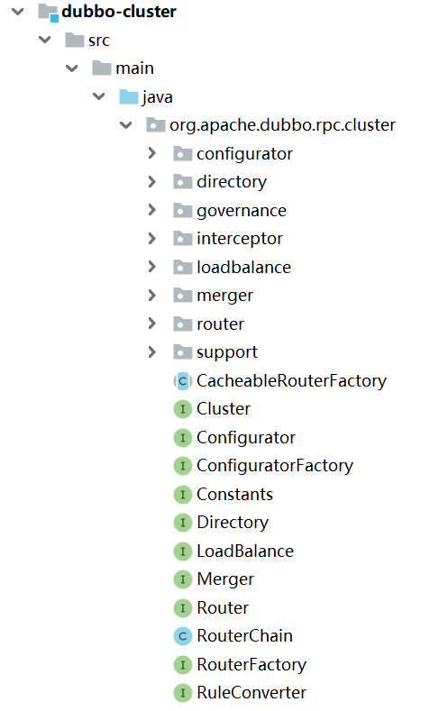
Dubbo Cluster 层隶属于 RPC 层，它在整个Dubbo 架构图中的位置如下：
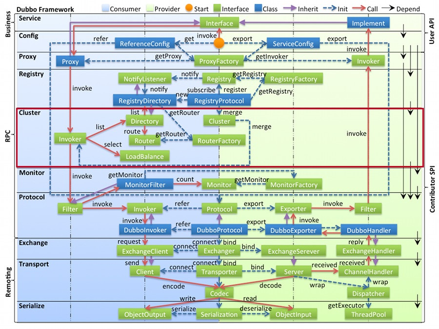
dubbo-cluster 模块的主要功能是将多个 Provider 聚合成一个 Provider 供 Consumer 调用，其中涉及集群的容错处理、路由规则的处理以及负载均衡。下图展示了 dubbo-cluster 模块中的核心组件：
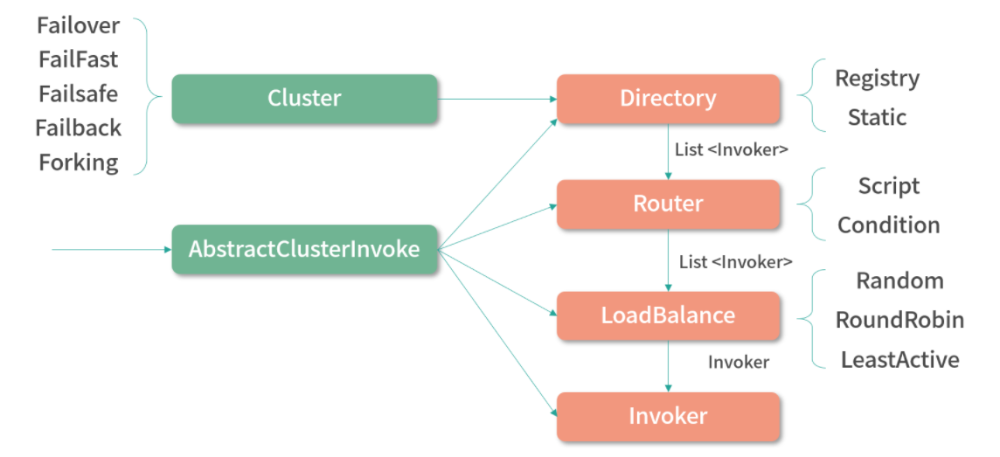
dubbo-cluster主要包括以下四个核心接口：
Cluster 接口 ：集群容错接口，主要是在某些 Provider 节点发生故障时，让 Consumer 的调用请求能够发送到正常的 Provider 节点，从而保证服务集群的高可用；
Directory 接口 ：表示服务目录，是多个 Invoker 的集合，是后续路由规则、负载均衡策略以及集群容错的基础；
Router 接口 ：表示路由器，请求经过 Router 时会按照用户指定的规则匹配出符合条件的 Provider；
LoadBalance 接口 ：负载均衡接口，Consumer 会按照指定的负载均衡策略，从 Provider 集合中选出一个最合适的 Provider 节点来处理请求。
Cluster 层的核心流程是：
当调用进入 Cluster 时，Cluster 会创建一个 AbstractClusterInvoker 对象；
这个 AbstractClusterInvoker 首先从 Directory 中获取当前 Invoker 集合；
然后，按照 Router 集合进行路由，得到符合条件的 Invoker 集合；
最后，按照 LoadBalance 指定的负载均衡策略，得到最终要调用的 Invoker 对象。
Directory 接口表示的是一个集合，该集合由多个 Invoker 构成，后续的路由处理、负载均衡、集群容错等一系列操作都是在 Directory 基础上实现的。
221// Directory.java2
3public interface Directory<T> extends Node {4 /**5 * 获取服务接口的类型6 */7 Class<T> getInterface();8
9 /**10 * 根据传入的Invocation请求，过滤自身维护的Invoker集合，返回符合条件的Invoker集合11 */12 List<Invoker<T>> list(Invocation invocation) throws RpcException;13
14 /**15 * 返回当前Directory对象维护的全部Invoker对象16 */17 List<Invoker<T>> getAllInvokers();18 /**19 * 返回Consumer端的Url20 */21 URL getConsumerUrl();22}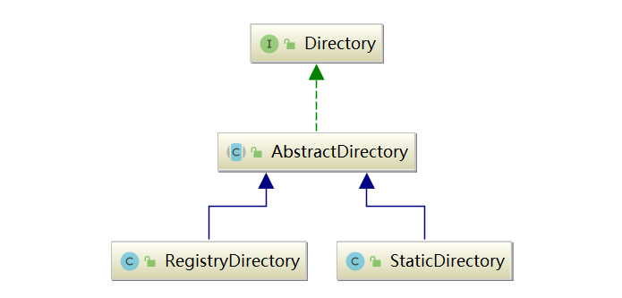
AbstractDirectory 是 Directory 接口的抽象实现，其中除了维护 Consumer 端的 URL 信息，还维护了一个 RouterChain 对象，用于记录当前使用的 Router 对象集合。
AbstractDirectory 对 list() 方法的实现也比较简单，就是直接委托给了 doList() 方法，doList() 是个抽象方法，由 AbstractDirectory 的子类实现。
421// AbstractDirectory.java2
3public abstract class AbstractDirectory<T> implements Directory<T> {4 private final URL url;5
6 private volatile boolean destroyed = false;7
8 private volatile URL consumerUrl;9
10 protected RouterChain<T> routerChain;11
12 public AbstractDirectory(URL url, RouterChain<T> routerChain) {13 if (url == null) {14 throw new IllegalArgumentException("url == null");15 }16
17 this.url = url.removeParameter(REFER_KEY).removeParameter(MONITOR_KEY);18 this.consumerUrl = url.addParameters(StringUtils.parseQueryString(url.getParameterAndDecoded(REFER_KEY)))19 .removeParameter(MONITOR_KEY);20 setRouterChain(routerChain);21 }22
23 24 public List<Invoker<T>> list(Invocation invocation) throws RpcException {25 if (destroyed) {26 throw new RpcException("Directory already destroyed .url: " + getUrl());27 }28 return doList(invocation);29 }30
31 32 public URL getUrl() {33 return url;34 }35
36 protected void addRouters(List<Router> routers) {37 routers = routers == null ? Collections.emptyList() : routers;38 routerChain.addRouters(routers);39 }40
41 protected abstract List<Invoker<T>> doList(Invocation invocation) throws RpcException;42}StaticDirectory 实现中维护的 Invoker 集合是静态的，在 StaticDirectory 对象创建完成之后，不会再发生变化。
在构造方法中，StaticDirectory 会接收一个 Invoker 集合，并赋值到自身的 invokers 字段中，作为底层的 Invoker 集合；
在 doList() 方法中，StaticDirectory 会使用 RouterChain 中的 Router 从 invokers 集合中过滤出符合路由规则的 Invoker 对象集合。
481// StaticDirectory.java2
3public class StaticDirectory<T> extends AbstractDirectory<T> {4
5 private final List<Invoker<T>> invokers;6
7 // 构造器8 public StaticDirectory(URL url, List<Invoker<T>> invokers, RouterChain<T> routerChain) {9 super(url == null && CollectionUtils.isNotEmpty(invokers) ? invokers.get(0).getUrl() : url, routerChain);10 if (CollectionUtils.isEmpty(invokers)) {11 throw new IllegalArgumentException("invokers == null");12 }13 this.invokers = invokers;14 }15
16 17 public Class<T> getInterface() {18 return invokers.get(0).getInterface();19 }20
21 22 public List<Invoker<T>> getAllInvokers() {23 return invokers;24 }25
26 public void buildRouterChain() {27 // 根据 URL 构造一个包含内置 Router 的 RouterChain 对象28 RouterChain<T> routerChain = RouterChain.buildChain(getUrl());29 // 将invokers与RouterChain关联30 routerChain.setInvokers(invokers);31 // 设置routerChain字段32 this.setRouterChain(routerChain);33 }34
35 36 protected List<Invoker<T>> doList(Invocation invocation) throws RpcException {37 List<Invoker<T>> finalInvokers = invokers;38 if (routerChain != null) {39 try {40 // 通过RouterChain过滤出符合条件的Invoker集合41 finalInvokers = routerChain.route(getConsumerUrl(), invocation);42 } catch (Throwable t) {43 logger.error("Failed to execute router: " + getUrl() + ", cause: " + t.getMessage(), t);44 }45 }46 return finalInvokers == null ? Collections.emptyList() : finalInvokers;47 }48}RegistryDirectory 中维护的 Invoker 集合会随着注册中心中维护的注册信息动态发生变化，这就依赖了 ZooKeeper 等注册中心的推送能力。
RegistryDirectory 实现了 NotifyListener 接口，当注册中心中的服务信息发生变化时，RegistryDirectory 会收到变更通知，然后动态增删底层 Invoker 集合。
核心字段：
701// RegistryDirectory.java2
3public class RegistryDirectory<T> extends AbstractDirectory<T> implements NotifyListener {4 // 集群策略适配器，通过 Dubbo SPI 方式动态创建5 private static final Cluster CLUSTER = ExtensionLoader.getExtensionLoader(Cluster.class).getAdaptiveExtension();6
7 // 路由工厂适配器，通过 Dubbo SPI 方式动态创建8 private static final RouterFactory ROUTER_FACTORY = ExtensionLoader.getExtensionLoader(RouterFactory.class).getAdaptiveExtension();9
10 // 服务对应的 ServiceKey，默认由 {interface}:[group]:[version] 三部分构成11 private final String serviceKey; 12
13 // 服务接口类型，例如org.apache.dubbo.demo.DemoService14 private final Class<T> serviceType; 15
16 // Consumer URL 中 refer 参数解析后得到的全部 KV17 private final Map<String, String> queryMap;18
19 // 只保留 Consumer 属性的 URL，也就是由 queryMap 集合重新生成的 URL20 private final URL directoryUrl; 21
22 // 是否引用多个服务组23 private final boolean multiGroup;24
25 // 使用的 Protocol 实现26 private Protocol protocol; 27
28 // 使用的注册中心实现29 private Registry registry; 30
31 private volatile boolean forbidden = false;32 private boolean shouldRegister;33 private boolean shouldSimplified;34
35 private volatile URL overrideDirectoryUrl;36 private volatile URL registeredConsumerUrl;37
38 // 动态更新的配置信息39 private volatile List<Configurator> configurators; 40
41 // Provider URL 与对应 Invoker 之间的映射，该集合会与 invokers 字段同时动态更新42 private volatile Map<String, Invoker<T>> urlInvokerMap; 43
44 // 动态更新的 Invoker 集合45 private volatile List<Invoker<T>> invokers;46
47 // 当前缓存的所有 Provider 的 URL，该集合会与 invokers 字段同时动态更新48 private volatile Set<URL> cachedInvokerUrls;49
50 private static final ConsumerConfigurationListener CONSUMER_CONFIGURATION_LISTENER = new ConsumerConfigurationListener();51 private ReferenceConfigurationListener serviceConfigurationListener;52
53 public RegistryDirectory(Class<T> serviceType, URL url) {54 // 传入的url参数是注册中心的URL55 super(url); 56 shouldRegister = !ANY_VALUE.equals(url.getServiceInterface()) && url.getParameter(REGISTER_KEY, true);57 shouldSimplified = url.getParameter(SIMPLIFIED_KEY, false);58 this.serviceType = serviceType;59 this.serviceKey = url.getServiceKey();60
61 // 解析refer参数值，得到其中Consumer的属性信息62 this.queryMap = StringUtils.parseQueryString(url.getParameterAndDecoded(REFER_KEY));63
64 // 将queryMap中的KV作为参数，重新构造URL，其中的protocol和path部分不变65 this.overrideDirectoryUrl = this.directoryUrl = turnRegistryUrlToConsumerUrl(url);66 String group = directoryUrl.getParameter(GROUP_KEY, "");67 this.multiGroup = group != null && (ANY_VALUE.equals(group) || group.contains(","));68 }69 //...70}subscribe方法：在完成初始化之后， Consumer 进行订阅的时候掉subscribe方法，内部会调用 Registry.subscribe() 完成订阅操作，同时还会将当前 RegistryDirectory 对象作为 NotifyListener 监听器添加到 Registry 中。
141// RegistryDirectory.java2
3public void subscribe(URL url) {4
5 setConsumerUrl(url);6
7 // 将当前RegistryDirectory对象作为ConfigurationListener记录到CONSUMER_CONFIGURATION_LISTENER中8 CONSUMER_CONFIGURATION_LISTENER.addNotifyListener(this);9
10 serviceConfigurationListener = new ReferenceConfigurationListener(this, url);11
12 // 完成订阅操作，注册中心的相关操作在前文已经介绍过了，这里不再重复13 registry.subscribe(url, this);14}notify方法：在 RegistryDirectory.notify() 方法中，首先会按照 category 对发生变化的 URL 进行分类，分成 configurators、routers、providers 三类，并分别对不同类型的 URL 进行处理：
将 configurators 类型的 URL 转化为 Configurator，保存到 configurators 字段中；
将 router 类型的 URL 转化为 Router，并通过 routerChain.addRouters() 方法添加 routerChain 中保存；
将 provider 类型的 URL 转化为 Invoker 对象，并记录到 invokers 集合和 urlInvokerMap 集合中。
261// RegistryDirectory.java2
3public synchronized void notify(List<URL> urls) {4
5 // 按照category进行分类，分成configurators、routers、providers三类6 Map<String, List<URL>> categoryUrls = urls.stream()7 .filter(Objects::nonNull)8 .filter(this::isValidCategory)9 .filter(this::isNotCompatibleFor26x)10 .collect(Collectors.groupingBy(this::judgeCategory));11
12 // 获取configurators类型的URL，并转换成Configurator对象13 List<URL> configuratorURLs = categoryUrls.getOrDefault(CONFIGURATORS_CATEGORY, Collections.emptyList());14 this.configurators = Configurator.toConfigurators(configuratorURLs).orElse(this.configurators);15
16 // 获取routers类型的URL，并转成Router对象，添加到RouterChain中17 List<URL> routerURLs = categoryUrls.getOrDefault(ROUTERS_CATEGORY, Collections.emptyList());18 toRouters(routerURLs).ifPresent(this::addRouters);19
20 // 获取providers类型的URL，调用refreshOverrideAndInvoker()方法进行处理21 List<URL> providerURLs = categoryUrls.getOrDefault(PROVIDERS_CATEGORY, Collections.emptyList());22
23 //... 在Dubbo3.0中会触发AddressListener监听器，但是现在AddressListener接口还没有实现，所以省略这段代码24
25 refreshOverrideAndInvoker(providerURLs);26}doList方法：该方法是AbstractDirectory留给其子类实现的一个方法，也是通过Directory接口获取 Invoker 集合的核心所在。
201// RegistryDirectory.java2
3public List<Invoker<T>> doList(Invocation invocation) {4
5 // 检测forbidden字段，当该字段在refreshInvoker()过程中设置为true时，表示无Provider可用，直接抛出异常6 if (forbidden) { 7 throw new RpcException("...");8 }9
10 if (multiGroup) {11 // multiGroup为true时的特殊处理，在refreshInvoker()方法中针对multiGroup为true的场景，已经使用Router进行了筛选，所以这里直接返回接口12 return this.invokers == null ? Collections.emptyList() : this.invokers;13 }14
15 List<Invoker<T>> invokers = null;16
17 // 通过RouterChain.route()方法筛选Invoker集合，最终得到符合路由条件的Invoker集合18 invokers = routerChain.route(getConsumerUrl(), invocation);19 return invokers == null ? Collections.emptyList() : invokers;20}Router决定了一次Dubbo调用的目标服务，Router接口的每个实现类代表了一个路由规则，当Consumer访问Provider时，Dubbo根据路由规则筛选出合适的Provider列表，之后通过负载均衡算法再次进行筛选。Router接口的继承关系如下图所示：
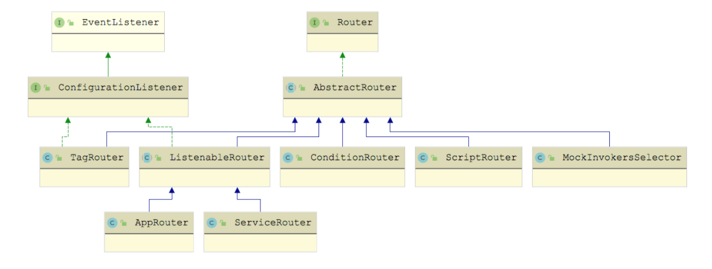
doList中可以看到了 RouterChain 这个 Router 链的存在。我们来着重分析下RouterChain。
核心字段：
151// RouterChain.java2
3public class RouterChain<T> {4
5 // 待过滤的 Invoker 集合6 private List<Invoker<T>> invokers = Collections.emptyList();7
8 // 真正要使用的 Router 集合9 // 不仅包括了上面 builtinRouters 集合中全部的 Router 对象，还包括通过 addRouters() 方法添加的 Router 对象10 private volatile List<Router> routers = Collections.emptyList();11
12 // 激活的内置 Router 集合13 private List<Router> builtinRouters = Collections.emptyList();14
15}构造器：会在传入的 URL 参数中查找 router 参数值，并根据该值获取确定激活的 RouterFactory，之后通过 Dubbo SPI 机制加载这些激活的 RouterFactory 对象，由 RouterFactory 创建内置 Router 实例：
231// RouterChain.java2
3private RouterChain(URL url) {4
5 // 通过ExtensionLoader加载激活的RouterFactory6 List<RouterFactory> extensionFactories = ExtensionLoader.getExtensionLoader(RouterFactory.class)7 .getActivateExtension(url, "router");8
9 // 遍历所有RouterFactory，调用其getRouter()方法创建相应的Router对象10 List<Router> routers = extensionFactories.stream()11 .map(factory -> factory.getRouter(url))12 .collect(Collectors.toList());13
14 // 初始化buildinRouters字段以及routers字段15 initWithRouters(routers); 16}17
18public void initWithRouters(List<Router> builtinRouters) {19 this.builtinRouters = builtinRouters;20 this.routers = new ArrayList<>(builtinRouters);21 // 这里会对routers集合进行排序22 this.sort(); 23}addRouter方法：在 Directory 实现中还可以通过 addRouter() 方法添加新的 Router 实例到 routers 字段中：
121// RouterChain.java2
3public void addRouters(List<Router> routers) {4 List<Router> newRouters = new ArrayList<>();5 // 添加builtinRouters集合6 newRouters.addAll(builtinRouters); 7 // 添加传入的Router集合8 newRouters.addAll(routers); 9 // 重新排序10 CollectionUtils.sort(newRouters); 11 this.routers = newRouters;12}route方法：RouterChain.route() 方法会遍历 routers 字段，逐个调用 Router 对象的 route() 方法，对 invokers 集合进行过滤，具体实现如下：
121// RouterChain.java2
3public List<Invoker<T>> route(URL url, Invocation invocation) {4 List<Invoker<T>> finalInvokers = invokers;5
6 // 遍历全部的Router对象7 for (Router router : routers) { 8 finalInvokers = router.route(finalInvokers, url, invocation);9
10 }11 return finalInvokers;12}真正进行路由的是 routers 集合中的 Router 对象 。接下来我们再来看 RouterFactory 这个工厂接口， RouterFactory 接口是一个扩展接口 ，具体定义如下：
81// RouterFactory.java2
3public interface RouterFactory {5 // 动态生成的适配器会根据protocol参数选择扩展实现6 ("protocol") 7 Router getRouter(URL url);8}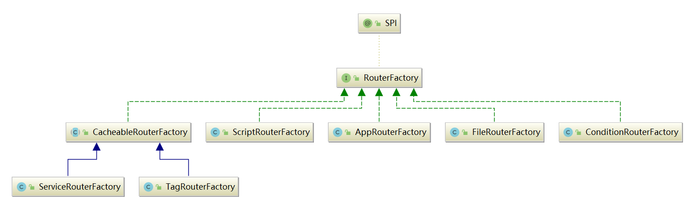
其扩展名为 condition，在其 getRouter() 方法中会创建 ConditionRouter 对象：
101// ConditionRouterFactory.java2
3public class ConditionRouterFactory implements RouterFactory {4 public static final String NAME = "condition";5
6 7 public Router getRouter(URL url) {8 return new ConditionRouter(url);9 }10}
ConditionRouter 是基于条件表达式的路由实现类 ，下面就是一条基于条件表达式的路由规则：
11host = 192.168.0.100 => host = 192.168.0.150
=>之前的为Consumer匹配的条件，该条件中的所有参数会与Consumer的URL进行对比，当Consumer满足匹配条件时，会对该Consumer的此次调用执行=>后面的过滤规则；
=>之后为Provider地址列表的过滤条件，该条件中的所有参数会和Provider的URL进行对比，Consumer最终只拿到过滤后的地址列表。注意：如果Consumer匹配条件为空，表示=>之后的过滤条件对所有Consumer生效，例如：=>host!=192.168.0.150，含义是所有Consumer都不能请求192.168.0.150这个Provider节点。
如果Provider过滤条件为空，表示禁止访问所有Provider，例如：host=192.168.0.100=>，含义是192.168.0.100这个Consumer不能访问任何Provider节点。
ConditionRouter的核心字段：
url（URL类型）：路由规则的URL，可以从rule参数中获取具体的路由规则；
ROUTE_PATTERN（Pattern类型）：用于切分路由规则的正则表达式；
priority（int类型）：路由规则的优先级，用于排序，该字段值越大，优先级越高，默认值为0；
force（boolean类型）：当路由结果为空时，是否强制执行。如果不强制执行，则路由结果为空的路由规则将会自动失效；如果强制执行，则直接返回空的路由结果；
whenCondition（Map类型）：Consumer匹配的条件集合，通过解析条件表达式rule的
=>之前半部分，可以得到该集合中的内容；thenCondition（Map类型）：Provider匹配的条件集合，通过解析条件表达式rule的
=>之后半部分，可以得到该集合中的内容。在ConditionRouter的构造方法中，会根据URL中携带的相应参数初始化priority、force、enable等字段，然后从URL的rule参数中获取路由规则进行解析，具体的解析逻辑是在init()方法中实现的。
211// ConditionRouter.java2public void init(String rule) {4// 将路由规则中的"consumer."和"provider."字符串清理掉6rule = rule.replace("consumer.", "").replace("provider.", "");7// 按照"=>"字符串进行分割，得到whenRule和thenRule两部分9int i = rule.indexOf("=>");10String whenRule = i < 0 ? null : rule.substring(0, i).trim();11String thenRule = i < 0 ? rule.trim() : rule.substring(i + 2).trim();12// 解析whenRule和thenRule，得到whenCondition和thenCondition两个条件集合14Map<String, MatchPair> when = StringUtils.isBlank(whenRule) || "true".equals(whenRule) ? new HashMap<String, MatchPair>() : parseRule(whenRule);15Map<String, MatchPair> then = StringUtils.isBlank(thenRule) || "false".equals(thenRule) ? null : parseRule(thenRule);16// ---往下看---18this.whenCondition = when;19// ---往下看---20this.thenCondition = then;21}解释：whenCondition和thenCondition两个集合中，
Key是条件表达式中指定的参数名称（例如host=192.168.0.150这个表达式中的host）。ConditionRouter支持三类参数：
服务调用信息，例如，method、argument等；
URL本身的字段，例如，protocol、host、port等；
URL上的所有参数，例如，application等。
Value是MatchPair对象，包含两个Set类型的集合——matches和mismatches。在使用MatchPair进行过滤的时候，会按照下面四条规则执行。
当mismatches集合为空的时候，会逐个遍历matches集合中的匹配条件，匹配成功任意一条即会返回true。这里具体的匹配逻辑以及后续mismatches集合中条件的匹配逻辑，都是在UrlUtils.isMatchGlobPattern()方法中实现，其中完成了如下操作：如果匹配条件以"$"符号开头，则从URL中获取相应的参数值进行匹配；当遇到""通配符的时候，会处理""通配符在匹配条件开头、中间以及末尾三种情况；
当matches集合为空的时候，会逐个遍历mismatches集合中的匹配条件，匹配成功任意一条即会返回false；
当matches集合和mismatches集合同时不为空时，会优先匹配mismatches集合中的条件，成功匹配任意一条规则，就会返回false；若mismatches中的条件全部匹配失败，才会开始匹配matches集合，成功匹配任意一条规则，就会返回true；
当上述三个步骤都没有成功匹配时，直接返回false。
parseRule()方法是如何解析一条完整的条件表达式，生成对应 MatchPair 的 ，具体实现如下：
631// ConditionRouter.java2private static Map<String, MatchPair> parseRule(String rule) throws ParseException {4Map<String, MatchPair> condition = new HashMap<String, MatchPair>();6MatchPair pair = null;8Set<String> values = null;10// 首先，按照ROUTE_PATTERN指定的正则表达式匹配整个条件表达式12final Matcher matcher = ROUTE_PATTERN.matcher(rule);13// 遍历匹配的结果15while (matcher.find()) {16// 每个匹配结果有两部分(分组)，第一部分是分隔符，第二部分是内容17String separator = matcher.group(1);18String content = matcher.group(2);19// ---(1) 没有分隔符，content即为参数名称21if (StringUtils.isEmpty(separator)) {22pair = new MatchPair();23// 初始化MatchPair对象，并将其与对应的Key(即content)记录到condition集合中24condition.put(content, pair);25}26// ---(4)&分隔符表示多个表达式,会创建多个MatchPair对象28else if ("&".equals(separator)) {29if (condition.get(content) == null) {30pair = new MatchPair();31condition.put(content, pair);32} else {33pair = condition.get(content);34}35// ---(2)=以及!=两个分隔符表示KV的分界线37}else if ("=".equals(separator)) {38if (pair == null) {39throw new ParseException("..."");40}41values = pair.matches;42values.add(content);43// ---(5)45}else if ("!=".equals(separator)) {46if (pair == null) {47throw new ParseException("...");48}49values = pair.mismatches;50values.add(content);51// ---(3) 逗号分隔符表示有多个Value值53}else if (",".equals(separator)) {54if (values == null || values.isEmpty()) {55throw new ParseException("...");56}57values.add(content);58} else {59throw new ParseException("...");60}61}62return condition;63}
理解parseRule()方法的工作原理：
11host=2.2.2.2,1.1.1.1,3.3.3.3&method!=get=>host=1.2.3.4经过ROUTE_PATTERN正则表达式的分组之后，我们得到如下分组：
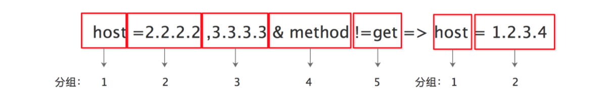
看
=>之前的Consumer匹配规则的处理。
分组1中，separator为空字符串，content为host字符串。此时会进入上面示例代码展示的parseRule()方法中（1）处的分支，创建MatchPair对象，并以host为Key记录到condition集合中。
分组2中，separator为"="空字符串，content为"2.2.2.2"字符串。处理该分组时，会进入parseRule()方法中（2）处的分支，在MatchPair的matches集合中添加"2.2.2.2"字符串。
分组3中，separator为","字符串，content为"3.3.3.3"字符串。处理该分组时，会进入parseRule()方法中（3）处的分支，继续向MatchPair的matches集合中添加"3.3.3.3"字符串。
分组4中，separator为"&"字符串，content为"method"字符串。处理该分组时，会进入parseRule()方法中（4）处的分支，创建新的MatchPair对象，并以method为Key记录到condition集合中。
分组5中，separator为"!="字符串，content为"get"字符串。处理该分组时，会进入parseRule()方法中（5）处的分支，向步骤4新建的MatchPair对象中的mismatches集合添加"get"字符串。
最后，我们得到的 whenCondition 集合如下图所示：
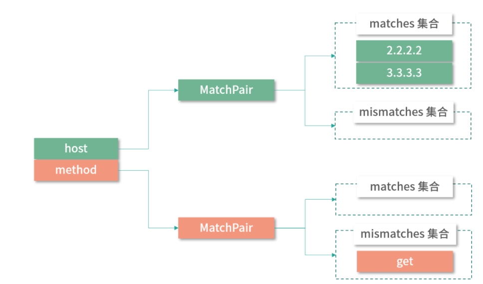
看
=>之后的规则得到的 thenCondition 集合，如下图所示：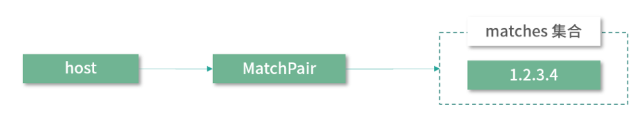
route() 方法：首先会尝试前面创建的whenCondition集合，判断此次发起调用的Consumer是否符合表达式中
=>之前的Consumer过滤条件，若不符合，直接返回整个invokers集合；若符合，则通过thenCondition集合对invokers集合进行过滤，得到符合Provider过滤条件的Invoker集合，然后返回给上层调用方。ConditionRouter.route()方法的核心实现如下：371// ConditionRouter.java2public <T> List<Invoker<T>> route(List<Invoker<T>> invokers, URL url, Invocation invocation)4throws RpcException {5// ...通过enable字段判断当前ConditionRouter对象是否可用7// ...当前invokers集合为空，则直接返回9// 匹配发起请求的Consumer是否符合表达式中=>之前的过滤条件11if (!matchWhen(url, invocation)) {12return invokers;13}14// 判断=>之后是否存在Provider过滤条件，若不存在则直接返回空集合，表示无Provider可用16List<Invoker<T>> result = new ArrayList<Invoker<T>>();17if (thenCondition == null) {18return result;19}20// 逐个判断Invoker是否符合表达式中=>之后的过滤条件22for (Invoker<T> invoker : invokers) {23if (matchThen(invoker.getUrl(), url)) {24// 记录符合条件的Invoker25result.add(invoker);26}27}28if (!result.isEmpty()) {30return result;31} else if (force) {32// 在无Invoker符合条件时，根据force决定是返回空集合还是返回全部Invoker33return result;34}35return invokers;37}
ScriptRouterFactory 的扩展名为 script，其 getRouter() 方法中会创建一个 ScriptRouter 对象并返回：
111// ScriptRouterFactory.java2
3public class ScriptRouterFactory implements RouterFactory {4
5 public static final String NAME = "script";6
7 8 public Router getRouter(URL url) {9 return new ScriptRouter(url);10 }11}
ScriptRouter：ScriptRouter 支持 JDK 脚本引擎的所有脚本 ，例如，JavaScript、JRuby、Groovy 等，通过
type=javascript参数设置脚本类型，缺省为 javascript。下面我们就定义一个 route() 函数进行 host 过滤：181function route(invokers, invocation, context){2var result = new java.util.ArrayList(invokers.size());3var targetHost = new java.util.ArrayList();5targetHost.add("10.134.108.2");6// 遍历Invoker集合8for (var i = 0; i < invokers.length; i) {9// 判断Invoker的host是否符合条件10if(targetHost.contains(invokers[i].getUrl().getHost())){11result.add(invokers[i]);12}13}14return result;15}16// 立即执行route()函数18route(invokers, invocation, context)
解释：我们可以将上面这段代码进行编码并作为rule参数的值添加到URL中，在这个URL传入ScriptRouter的构造函数时，即可被ScriptRouter解析。ScriptRouter的核心字段有如下几个：
url（URL类型）：路由规则的URL，可以从rule参数中获取具体的路由规则。
priority（int类型）：路由规则的优先级，用于排序，该字段值越大，优先级越高，默认值为0。
ENGINES（ConcurrentHashMap类型）：这是一个static集合，其中的Key是脚本语言的名称，Value是对应的ScriptEngine对象。这里会按照脚本语言的类型复用ScriptEngine对象。
engine（ScriptEngine类型）：当前ScriptRouter使用的ScriptEngine对象。
rule（String类型）：当前ScriptRouter使用的具体脚本内容。
function（CompiledScript类型）：根据rule这个具体脚本内容编译得到。
ScriptRouter构造器：
首先会初始化 url 字段以及 priority 字段（用于排序），然后根据 URL 中的 type 参数初始化 engine、rule 和 function 三个核心字段。
181// ScriptRouter.java2public ScriptRouter(URL url) {4this.url = url;6this.priority = url.getParameter(PRIORITY_KEY, SCRIPT_ROUTER_DEFAULT_PRIORITY);7// 根据URL中的type参数值，从ENGINES集合中获取对应的ScriptEngine对象9engine = getEngine(url);10// 获取URL中的rule参数值，即为具体的脚本12rule = getRule(url);13Compilable compilable = (Compilable) engine;15// 编译rule字段中的脚本，得到function字段17function = compilable.compile(rule);18}ScriptRouter#route()方法：其中首先会创建调用 function 函数所需的入参，也就是 Bindings 对象，然后调用 function 函数得到过滤后的 Invoker 集合，最后通过 getRoutedInvokers() 方法整理 Invoker 集合得到最终的返回值：
251// ScriptRouter.java2public <T> List<Invoker<T>> route(List<Invoker<T>> invokers, URL url, Invocation invocation) throws RpcException {4// 创建Bindings对象作为function函数的入参6Bindings bindings = createBindings(invokers, invocation);7if (function == null) {9return invokers;10}11// 调用function函数，并在getRoutedInvokers()方法中整理得到的Invoker集合13return getRoutedInvokers(function.eval(bindings));14}15private <T> Bindings createBindings(List<Invoker<T>> invokers, Invocation invocation) {17Bindings bindings = engine.createBindings();18// 与前面的javascript的示例脚本结合，我们可以看到这里在Bindings中为脚本中的route()函数提供了invokers、Invocation、context三个参数20bindings.put("invokers", new ArrayList<>(invokers));21bindings.put("invocation", invocation);22bindings.put("context", RpcContext.getContext());23return bindings;25}
FileRouterFactory 是 ScriptRouterFactory 的装饰器 ，其扩展名为 file，FileRouterFactory 在 ScriptRouterFactory 基础上 增加了读取文件的能力 。我们可以将 ScriptRouter 使用的路由规则保存到文件中，然后在 URL 中指定文件路径，FileRouterFactory 从中解析到该脚本文件的路径并进行读取，调用 ScriptRouterFactory 去创建相应的 ScriptRouter 对象。
FileRouterFactory的getRouter() 方法，其中完成了 file 协议的 URL 到 script 协议 URL 的转换，如下是一个转换示例，首先会将 file:// 协议转换成 script:// 协议，然后会添加 type 参数和 rule 参数，其中 type 参数值根据文件后缀名确定，该示例为 js，rule 参数值为文件内容。
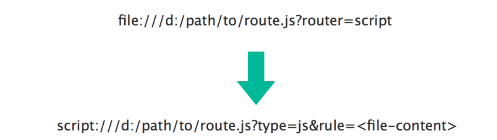
441// FileRouterFactory.java2
3public class FileRouterFactory implements RouterFactory {4
5 public static final String NAME = "file";6 private RouterFactory routerFactory;7
8 public void setRouterFactory(RouterFactory routerFactory) {9 this.routerFactory = routerFactory;10 }11
12 13 public Router getRouter(URL url) {14 try {15 // 默认使用script协议16 String protocol = url.getParameter(ROUTER_KEY, ScriptRouterFactory.NAME); 17 String type = null;18 String path = url.getPath();19
20 // 获取脚本文件的语言类型21 if (path != null) {22 int i = path.lastIndexOf('.');23 if (i > 0) {24 type = path.substring(i + 1);25 }26 }27 // 读取脚本文件中的内容28 String rule = IOUtils.read(new FileReader(new File(url.getAbsolutePath())));29
30 // 创建script协议的URL31 boolean runtime = url.getParameter(RUNTIME_KEY, false);32 URL script = URLBuilder.from(url)33 .setProtocol(protocol)34 .addParameter(TYPE_KEY, type)35 .addParameter(RUNTIME_KEY, runtime)36 .addParameterAndEncoded(RULE_KEY, rule)37 .build();38 // 获取script对应的Router实现39 return routerFactory.getRouter(script);40 } catch (IOException e) {41 throw new IllegalStateException(e.getMessage(), e);42 }43 }44} TagRouterFactory 作为 RouterFactory 接口的扩展实现 ，其扩展名为 tag。但是需要注意的是，TagRouterFactory 与 ConditionRouterFactory、ScriptRouterFactory 的不同之处在于：它是 通过继承 CacheableRouterFactory 这个抽象类，间接实现了 RouterFactory 接口 。
121// TagRouterFactory.java2
3(order = 100)4public class TagRouterFactory extends CacheableRouterFactory {5
6 public static final String NAME = "tag";7
8 9 protected Router createRouter(URL url) {10 return new TagRouter(url);11 }12}
CacheableRouterFactory：抽象类中维护了一个 ConcurrentMap 集合，用来缓存 Router，其中的 Key 是 ServiceKey。在 CacheableRouterFactory 的 getRouter() 方法中，会优先根据 URL 的 ServiceKey 查询 routerMap 集合，查询失败之后会调用 createRouter() 抽象方法来创建相应的 Router 对象。在 TagRouterFactory.createRouter() 方法中，创建的自然就是 TagRouter 对象了。
121// CacheableRouterFactory.java2public abstract class CacheableRouterFactory implements RouterFactory {4private ConcurrentMap<String, Router> routerMap = new ConcurrentHashMap<>();5public Router getRouter(URL url) {8return routerMap.computeIfAbsent(url.getServiceKey(), k -> createRouter(url));9}10protected abstract Router createRouter(URL url);12}TagRouter介绍：作用是将某一个或多个 Provider 划分到同一分组，约束流量只在指定分组中流转，这样就可以轻松达到流量隔离的目的，从而支持灰度发布等场景。
目前，Dubbo 提供了动态和静态两种方式给 Provider 打标签，其中动态方式就是通过服务治理平台动态下发标签，静态方式就是在 XML 等静态配置中打标签。Consumer 端可以在 RpcContext 的 attachment 中添加
request.tag附加属性，注意 保存在 attachment 中的值将会在一次完整的远程调用中持续传递 ，我们只需要在起始调用时进行设置，就可以达到标签的持续传递。
151- Tag使用示例，在实际的开发测试中，一个完整的请求会涉及非常多的 Provider，分不同团队进行维护，这些团队每天都会处理不同的需求在负责的Provider服务中进行修改。2• 如果所有团队都使用一套测试环境，那么测试环境就会变得很不稳定。如下图所示，4 个 Provider 分属不同的团队管理，Provider 2 和 Provider 4 在测试环境测试，部署了有 Bug 的版本，这样就会导致整个测试环境无法正常处理请求，在这样一个不稳定的测试环境中排查 Bug 是非常困难的，因为可能排查到最后，发现是别人的 Bug。46• 为了解决上述问题，我们可以针对每个需求分别独立出一套测试环境，但是这个方案会占用大量机器，前期的搭建成本以及后续的维护成本也都非常高。8• 下面是一个通过Tag 方式实现环境隔离的架构图，其中，需求 1 对 Provider 2 的请求会全部落到有需求 1 标签的 Provider 上，其他 Provider 使用稳定测试环境中的 Provider；需求 2 对 Provider 4 的请求会全部落到有需求 2 标签的 Provider 4 上，其他 Provider 使用稳定测试环境中的 Provider。10<img src="assets/088.png" alt="088" style="zoom:67%;" />12• 在一些特殊场景中，会有 Tag 降级的场景，比如找不到对应 Tag 的 Provider，会按照一定的规则进行降级。如果在 Provider 集群中不存在与请求 Tag 对应的 Provider 节点，则默认将降级请求 Tag 为空的 Provider；如果希望在找不到匹配 Tag 的 Provider 节点时抛出异常的话，我们需设置 request.tag.force = true。14• 如果请求中的 request.tag 未设置，只会匹配 Tag 为空的 Provider，也就是说即使集群中存在可用的服务，若 Tag 不匹配也就无法调用。一句话总结， **携带 Tag 的请求可以降级访问到无 Tag 的 Provider，但不携带 Tag 的请求永远无法访问到带有 Tag 的 Provider** 。
TagRouter实现：在TagRouter中持有一个TagRouterRule对象的引用，在TagRouterRule中维护了一个Tag集合，而在每个Tag对象中又都维护了一个Tag的名称，以及Tag绑定的网络地址集合，如下图所示：
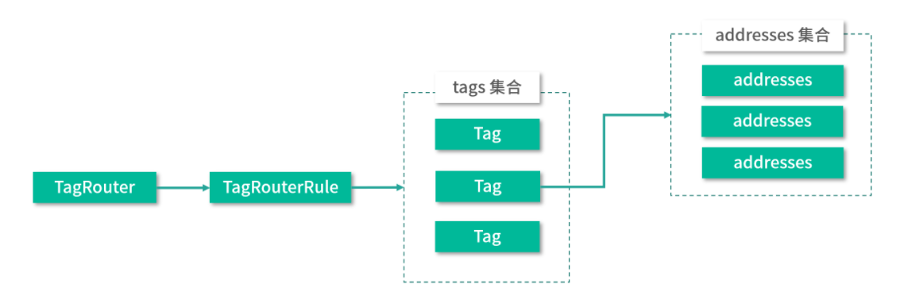
另外，在TagRouterRule中还维护了addressToTagnames、tagnameToAddresses两个集合（都是Map`>类型），分别记录了Tag名称到各个address的映射以及address到Tag名称的映射。在TagRouterRule的init()方法中，会根据tags集合初始化这两个集合。
TagRouter构造TagRouterRule的过程，TagRouter除了实现了Router接口之外，还实现了ConfigurationListener接口，如下图所示：
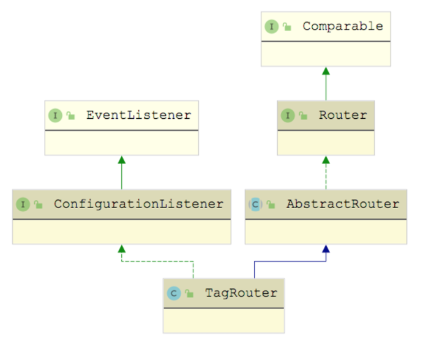
ConfigurationListener用于监听配置的变化，其中就包括 TagRouterRule 配置的变更 。当我们通过动态更新 TagRouterRule 配置的时候，就会触发 ConfigurationListener 接口的 process() 方法，TagRouter 对 process() 方法的实现如下：
131// TagRouter.java2public synchronized void process(ConfigChangedEvent event) {4// DELETED事件会直接清空tagRouterRule6if (event.getChangeType().equals(ConfigChangeType.DELETED)) {7this.tagRouterRule = null;8}9// 其他事件会解析最新的路由规则，并记录到tagRouterRule字段中10else {11this.tagRouterRule = TagRuleParser.parse(event.getContent());12}13}
我们可以看到，如果是删除配置的操作，则直接将 tagRouterRule 设置为 null，如果是修改或新增配置，则通过 TagRuleParser 解析传入的配置，得到对应的 TagRouterRule 对象。TagRuleParser 可以解析 yaml 格式的 TagRouterRule 配置，下面是一个配置示例：
121forcefalse2runtimetrue3enabledfalse4priority15keydemo-provider6tags7nametag18addressesnull9nametag210addresses"30.5.120.37:20880"11nametag312addresses经过 TagRuleParser 解析得到的 TagRouterRule 结构，如下所示：
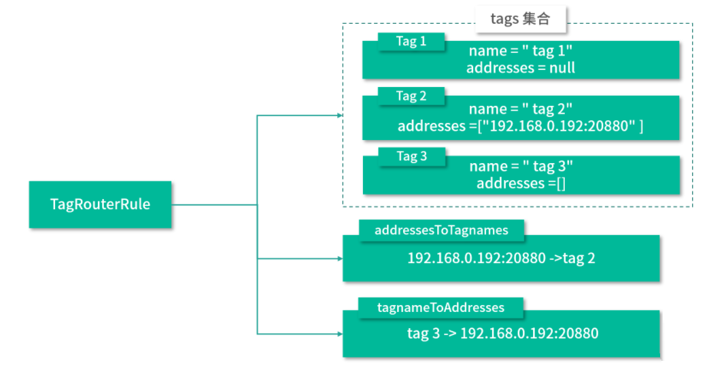
TagRouterRule从AbstractRouterRule 抽象类继承了一些控制字段，后面介绍的 ConditionRouterRule 也继承了 AbstractRouterRule。
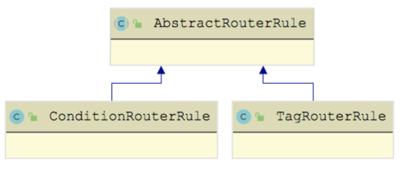
AbstractRouterRule中核心字段的具体含义大致可总结为如下。
key（string 类型）、scope（string 类型）：key 明确规则体作用在哪个服务或应用。scope 为 service 时，key 由 [{group}:]{service}[:{version}] 构成；scope 为 application 时，key 为 application 的名称。
rawRule（string 类型）：记录了路由规则解析前的原始字符串配置。
runtime（boolean 类型）：表示是否在每次调用时执行该路由规则。如果设置为 false，则会在 Provider 列表变更时预先执行并缓存结果，调用时直接从缓存中获取路由结果。
force（boolean 类型）：当路由结果为空时，是否强制执行，如果不强制执行，路由结果为空的路由规则将自动失效。该字段默认值为 false。
valid（boolean 类型）：用于标识解析生成当前 RouterRule 对象的配置是否合法。
enabled（boolean 类型）：标识当前路由规则是否生效。
priority（int 类型）：用于表示当前 RouterRule 的优先级。
dynamic（boolean 类型）：表示该路由规则是否为持久数据，当注册方退出时，路由规则是否依然存在。
我们可以看到，AbstractRouterRule 中的核心字段与前面的示例配置是一一对应的。
Router最终目的是要过滤符合条件的Invoker对象，下面我们一起来看TagRouter是如何使用TagRouterRule路由逻辑进行Invoker过滤的，大致步骤如下。
如果invokers为空，直接返回空集合。
检查关联的tagRouterRule对象是否可用，如果不可用，则会直接调用filterUsingStaticTag()方法进行过滤，并返回过滤结果。在filterUsingStaticTag()方法中，会比较请求携带的tag值与ProviderURL中的tag参数值。
获取此次调用的tag信息，这里会尝试从Invocation以及URL的参数中获取。
如果此次请求指定了tag信息，则首先会获取tag关联的address集合。
如果address集合不为空，则根据该address集合中的地址，匹配出符合条件的Invoker集合。如果存在符合条件的Invoker，则直接将过滤得到的Invoker集合返回；如果不存在，就会根据force配置决定是否返回空Invoker集合。
如果address集合为空，则会将请求携带的tag值与ProviderURL中的tag参数值进行比较，匹配出符合条件的Invoker集合。如果存在符合条件的Invoker，则直接将过滤得到的Invoker集合返回；如果不存在，就会根据force配置决定是否返回空Invoker集合。
如果force配置为false，且符合条件的Invoker集合为空，则返回所有不包含任何tag的Provider列表。
如果此次请求未携带tag信息，则会先获取TagRouterRule规则中全部tag关联的address集合。如果address集合不为空，则过滤出不在address集合中的Invoker并添加到结果集合中，最后，将ProviderURL中的tag值与TagRouterRule中的tag名称进行比较，得到最终的Invoker集合。
601// 上述流程的具体实现是在 TagRouter.route() 方法中2// TagRouter.java3public <T> List<Invoker<T>> route(List<Invoker<T>> invokers, URL url, Invocation invocation) throws RpcException {5//... 如果invokers为空，直接返回空集合(略)7final TagRouterRule tagRouterRuleCopy = tagRouterRule;8if (tagRouterRuleCopy == null || !tagRouterRuleCopy.isValid() || !tagRouterRuleCopy.isEnabled()) {9return filterUsingStaticTag(invokers, url, invocation);10}11// 检查关联的tagRouterRule对象是否可用，如果不可用，则会直接调用filterUsingStaticTag() 方法进行过滤13List<Invoker<T>> result = invokers;14// 获取此次调用的tag信息，尝试从Invocation以及URL中获取16String tag = StringUtils.isEmpty(invocation.getAttachment(TAG_KEY)) ? url.getParameter(TAG_KEY) :17invocation.getAttachment(TAG_KEY);18if (StringUtils.isNotEmpty(tag)) { // 此次请求一个特殊的tag20// 获取tag关联的address集合21List<String> addresses = tagRouterRuleCopy.getTagnameToAddresses().get(tag);22if (CollectionUtils.isNotEmpty(addresses)) {23// 根据上面的address集合匹配符合条件的Invoker24result = filterInvoker(invokers, invoker -> addressMatches(invoker.getUrl(), addresses));25// 如果存在符合条件的Invoker，则直接将过滤得到的Invoker集合返回27// 如果不存在符合条件的Invoker，根据force配置决定是否返回空Invoker集合28if (CollectionUtils.isNotEmpty(result) || tagRouterRuleCopy.isForce()) {29return result;30}31} else {32// 如果 address 集合为空，则会将请求携带的 tag 与 Provider URL 中的 tag 参数值进行比较，匹配出符合条件的 Invoker 集合。33result = filterInvoker(invokers, invoker -> tag.equals(invoker.getUrl().getParameter(TAG_KEY)));34}35if (CollectionUtils.isNotEmpty(result) || isForceUseTag(invocation)) {37return result; // 存在符合条件的Invoker或是force配置为true38}else { // 如果 force 配置为 false，且符合条件的 Invoker 集合为空，则返回所有不包含任何 tag 的 Provider 列表。39List<Invoker<T>> tmp = filterInvoker(invokers, invoker -> addressNotMatches(invoker.getUrl(),40tagRouterRuleCopy.getAddresses()));41return filterInvoker(tmp, invoker -> StringUtils.isEmpty(invoker.getUrl().getParameter(TAG_KEY)));42}43} else {44// 如果此次请求未携带 tag 信息，则会先获取 TagRouterRule 规则中全部 tag 关联的 address 集合。45List<String> addresses = tagRouterRuleCopy.getAddresses();46if (CollectionUtils.isNotEmpty(addresses)) {47// 如果 address 集合不为空，则过滤出不在 address 集合中的 Invoker 并添加到结果集合中。48result = filterInvoker(invokers, invoker -> addressNotMatches(invoker.getUrl(), addresses));49if (CollectionUtils.isEmpty(result)) {50return result;51}52}53// 如果不存在符合条件的 Invoker 或是 address 集合为空，则会将请求携带的 tag 与 Provider URL 中的 tag 参数值进行比较，得到最终的 Invoker 集合。55return filterInvoker(result, invoker -> {56String localTag = invoker.getUrl().getParameter(TAG_KEY);57return StringUtils.isEmpty(localTag) || !tagRouterRuleCopy.getTagNames().contains(localTag);58});59}60}
ServiceRouterFactory 也继承 CachabelRouterFactory，具有了缓存的能力 ，具体继承关系如下图所示：
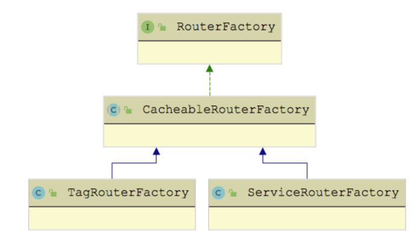
121// ServiceRouterFactory.java2
3(order = 300)4public class ServiceRouterFactory extends CacheableRouterFactory {5
6 public static final String NAME = "service";7
8 9 protected Router createRouter(URL url) {10 return new ServiceRouter(url);11 }12}
ServiceRouterFactory 创建的是 ServiceRouter，与 ServiceRouter 类似的是 AppRouter， 两者都继承了 ListenableRouter 抽象类 （虽然 ListenableRouter 是个抽象类，但是没有抽象方法留给子类实现），继承关系如下图所示：
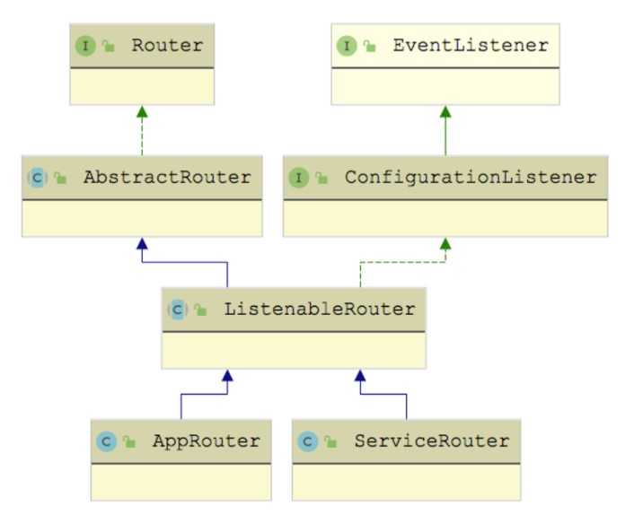
ListenableRouter：ListenableRouter 在ConditionRouter基础上添加了动态配置的能力 ，ListenableRouter 的 process() 方法与 TagRouter 中的 process() 方法类似：
对于
ConfigChangedEvent.DELETE事件，直接清空 ListenableRouter 中维护的 ConditionRouterRule 和 ConditionRouter 集合的引用；对于
ADDED、UPDATED事件，则通过 ConditionRuleParser 解析事件内容，得到相应的 ConditionRouterRule 对象和 ConditionRouter 集合。
这里的 ConditionRuleParser 同样是以 yaml 文件的格式解析 ConditionRouterRule 的相关配置。ConditionRouterRule 中维护了一个 conditions 集合（List
<String>类型），记录了多个 Condition 路由规则，对应生成多个 ConditionRouter 对象。
在 ListenableRouter 的 route() 方法中，会遍历全部 ConditionRouter 过滤出符合全部路由条件的 Invoker 集合。
121// ListenableRouter.java2public <T> List<Invoker<T>> route(List<Invoker<T>> invokers, URL url, Invocation invocation) throws RpcException {4if (CollectionUtils.isEmpty(invokers) || conditionRouters.size() == 0) {5return invokers; // 检查边界条件，直接返回invokers集合6}7for (Router router : conditionRouters) { // 路由规则进行过滤9invokers = router.route(invokers, url, invocation);10}11return invokers;12}ServiceRouter 和 AppRouter 都是简单地继承了 ListenableRouter 抽象类，且没有覆盖 ListenableRouter 的任何方法，两者只有以下两点区别。
一个是 priority 字段值不同 。ServiceRouter 为 140，AppRouter 为 150，也就是说 ServiceRouter 要先于 AppRouter 执行。
另一个是获取 ConditionRouterRule 配置的 Key 不同 。ServiceRouter 使用的 RuleKey 是由 {interface}:[version]:[group] 三部分构成，获取的是一个服务对应的 ConditionRouterRule。AppRouter 使用的 RuleKey 是 URL 中的 application 参数值，获取的是一个服务实例对应的 ConditionRouterRule。
在老版本的 Dubbo 中，我们可以通过服务治理控制台向注册中心的 configurators 目录写入动态配置的 URL。在 Dubbo 2.7.x 版本中，动态配置信息除了可以写入注册中心的 configurators 目录之外，还可以写入外部的配置中心。
首先，我们需要了解 configurators 目录中 URL 都有哪些协议以及这些协议的含义，然后还要知道 Dubbo 是如何解析这些 URL 得到 Configurator 对象的，以及 Configurator 是如何与已有的 Provider URL 共同作用得到实现动态更新配置的效果。
写入注册中心 configurators 中的动态配置有 override 和 absent 两种协议。下面是一个 override 协议的示例：
11override://0.0.0.0/org.apache.dubbo.demo.DemoService?category=configurators&dynamic=false&enabled=true&application=dubbo-demo-api-consumer&timeout=1000override：表示采用覆盖方式。Dubbo 支持 override 和 absent 两种协议，我们也可以通过 SPI 的方式进行扩展；
0.0.0.0：表示对所有 IP 生效。如果只想覆盖某个特定 IP 的 Provider 配置，可以使用该 Provider 的具体 IP；
org.apache.dubbo.demo.DemoService：表示只对指定服务生效；
category=configurators：表示该 URL 为动态配置类型；
dynamic=false：表示该 URL 为持久数据，即使注册该 URL 的节点退出，该 URL 依旧会保存在注册中心；
enabled=true：表示该 URL 的覆盖规则已生效；
application=dubbo-demo-api-consumer：表示只对指定应用生效。如果不指定，则默认表示对所有应用都生效；
timeout=1000：表示将满足以上条件 Provider URL 中的 timeout 参数值覆盖为 1000。如果想覆盖其他配置，可以直接以参数的形式添加到 override URL 之上。
当我们在注册中心的 configurators 目录中添加 override（或 absent）协议的 URL 时，Registry 会收到注册中心的通知，回调注册在其上的 NotifyListener，其中就包括 RegistryDirectory。
Configurator 接口抽象了一条配置信息，同时提供了将配置 URL 解析成 Configurator 对象的工具方法。Configurator 接口具体定义如下：
591// Configurator.java2
3public interface Configurator extends Comparable<Configurator> {4
5 // 获取该Configurator对象对应的配置URL，例如前文介绍的override协议URL6 URL getUrl();7
8 // configure()方法接收的参数是原始URL，返回经过Configurator修改后的URL9 URL configure(URL url);10
11 // toConfigurators()工具方法可以将多个配置URL对象解析成相应的Configurator对象12 static Optional<List<Configurator>> toConfigurators(List<URL> urls) {13
14 // 创建ConfiguratorFactory适配器15 ConfiguratorFactory configuratorFactory = ExtensionLoader.getExtensionLoader(ConfiguratorFactory.class).getAdaptiveExtension();16
17 // 记录解析的结果18 List<Configurator> configurators = new ArrayList<>(urls.size()); 19
20 for (URL url : urls) {21 // 遇到empty协议，直接清空configurators集合，结束解析，返回空集合22 if (EMPTY_PROTOCOL.equals(url.getProtocol())) {23 configurators.clear();24 break;25 }26
27 Map<String, String> override = new HashMap<>(url.getParameters());28 override.remove(ANYHOST_KEY);29
30 if (override.size() == 0) { // 如果该配置URL没有携带任何参数，则跳过该URL31 configurators.clear();32 continue;33 }34
35 // 通过ConfiguratorFactory适配器选择合适ConfiguratorFactory扩展，并创建Configurator对象36 configurators.add(configuratorFactory.getConfigurator(url));37 }38
39 // 排序40 Collections.sort(configurators); 41 return Optional.of(configurators);42 }43
44 // 排序首先按照ip进行排序，所有ip的优先级都高于0.0.0.0，当ip相同时，会按照priority参数值进行排序45 default int compareTo(Configurator o) {46 if (o == null) {47 return -1;48 }49
50 int ipCompare = getUrl().getHost().compareTo(o.getUrl().getHost());51 if (ipCompare == 0) {52 int i = getUrl().getParameter(PRIORITY_KEY, 0);53 int j = o.getUrl().getParameter(PRIORITY_KEY, 0);54 return Integer.compare(i, j);55 } else {56 return ipCompare;57 }58 }59}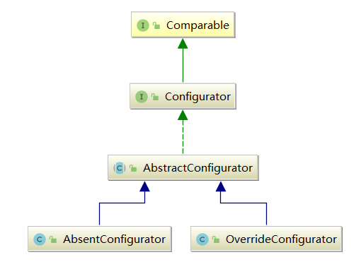
其中，AbstractConfigurator 中维护了一个 configuratorUrl 字段，记录了完整的配置 URL。 AbstractConfigurator 是一个模板类，其核心实现是 configure() 方法 ，具体实现如下：
321// AbstractConfigurator.java2
3public URL configure(URL url) {4
5 // 这里会根据配置URL的enabled参数以及host决定该URL是否可用，同时还会根据原始URL是否为空以及原始URL的host是否为空，决定当前是否执行后续覆盖逻辑6 if (!configuratorUrl.getParameter(ENABLED_KEY, true) || configuratorUrl.getHost() == null || url == null || url.getHost() == null) {7 return url;8 }9
10 // 针对2.7.0之后版本，这里添加了一个configVersion参数作为区分11 String apiVersion = configuratorUrl.getParameter(CONFIG_VERSION_KEY);12
13 // 对2.7.0之后版本的配置处理14 if (StringUtils.isNotEmpty(apiVersion)) { 15
16 String currentSide = url.getParameter(SIDE_KEY);17 String configuratorSide = configuratorUrl.getParameter(SIDE_KEY);18
19 // 根据配置URL中的side参数以及原始URL中的side参数值进行匹配20 if (currentSide.equals(configuratorSide) && CONSUMER.equals(configuratorSide) && 0 == configuratorUrl.getPort()) {21 url = configureIfMatch(NetUtils.getLocalHost(), url);22 } else if (currentSide.equals(configuratorSide) && PROVIDER.equals(configuratorSide) && url.getPort() == configuratorUrl.getPort()) {23 url = configureIfMatch(url.getHost(), url);24 }25 } else { 26 // ---往下看---27 // 2.7.0版本之前对配置的处理28 url = configureDeprecated(url);29 // ---end---30 }31 return url;32}
configureDeprecated() 方法对历史版本的兼容 ，其实这也是对注册中心
configurators目录下配置 URL 的处理，具体实现如下：231// AbstractConfigurator.java2private URL configureDeprecated(URL url) {4// 如果配置URL中的端口不为空，则是针对Provider的，需要判断原始URL的端口，两者端口相同，才能执行configureIfMatch()方法中的配置方法6if (configuratorUrl.getPort() != 0) {7if (url.getPort() == configuratorUrl.getPort()) {8// ---往下看---9return configureIfMatch(url.getHost(), url);10// ---end---11}12} else {13// 如果没有指定端口，则该配置URL要么是针对Consumer的，要么是针对任意URL的（即host为0.0.0.0）14// 如果原始URL属于Consumer，则使用Consumer的host进行匹配15if (url.getParameter(SIDE_KEY, PROVIDER).equals(CONSUMER)) {16return configureIfMatch(NetUtils.getLocalHost(), url);17} else if (url.getParameter(SIDE_KEY, CONSUMER).equals(PROVIDER)) {18// 如果是Provider URL，则用0.0.0.0来配置19return configureIfMatch(ANYHOST_VALUE, url);20}21}22return url;23}configureIfMatch() 方法会排除匹配 URL 中不可动态修改的参数，并调用 Configurator 子类的
doConfigurator()方法重写原始 URL，具体实现如下：491// AbstractConfigurator.java2private URL configureIfMatch(String host, URL url) {4if (ANYHOST_VALUE.equals(configuratorUrl.getHost()) || host.equals(configuratorUrl.getHost())) { // 匹配host6String providers = configuratorUrl.getParameter(OVERRIDE_PROVIDERS_KEY);7if (StringUtils.isEmpty(providers) || providers.contains(url.getAddress()) || providers.contains(ANYHOST_VALUE)) {8String configApplication = configuratorUrl.getParameter(APPLICATION_KEY,10configuratorUrl.getUsername());11String currentApplication = url.getParameter(APPLICATION_KEY, url.getUsername());12if (configApplication == null || ANY_VALUE.equals(configApplication)14|| configApplication.equals(currentApplication)) { // 匹配application15// 排除不能动态修改的属性，其中包括category、check、dynamic、enabled还有以~开头的属性17Set<String> conditionKeys = new HashSet<String>();18conditionKeys.add(CATEGORY_KEY);20conditionKeys.add(Constants.CHECK_KEY);21conditionKeys.add(DYNAMIC_KEY);22conditionKeys.add(ENABLED_KEY);23conditionKeys.add(GROUP_KEY);24conditionKeys.add(VERSION_KEY);25conditionKeys.add(APPLICATION_KEY);26conditionKeys.add(SIDE_KEY);27conditionKeys.add(CONFIG_VERSION_KEY);28conditionKeys.add(COMPATIBLE_CONFIG_KEY);29conditionKeys.add(INTERFACES);30for (Map.Entry<String, String> entry : configuratorUrl.getParameters().entrySet()) {32String key = entry.getKey();33String value = entry.getValue();34if (key.startsWith("~") || APPLICATION_KEY.equals(key) || SIDE_KEY.equals(key)) {35conditionKeys.add(key);36// 如果配置URL与原URL中以~开头的参数值不相同，则不使用该配置URL重写原URL37if (value != null && !ANY_VALUE.equals(value)38&& !value.equals(url.getParameter(key.startsWith("~") ? key.substring(1) : key))) {39return url;40}41}42}43// 移除配置URL不支持动态配置的参数之后，调用Configurator子类的doConfigure方法重新生成URL44return doConfigure(url, configuratorUrl.removeParameters(conditionKeys));45}46}47}48return url;49}AbstractConfigurator.configure() 方法中针对 2.7.0 版本之后动态配置的处理，其中会根据
side参数明确判断配置 URL 和原始 URL 属于 Consumer 端还是 Provider 端，判断逻辑也更加清晰。匹配之后的具体替换过程同样是调用 configureIfMatch() 方法实现的，这里不再重复。
Configurator 的两个子类实现非常简单。在 OverrideConfigurator 的 doConfigure() 方法中，会直接用配置 URL 中剩余的全部参数，覆盖原始 URL 中的相应参数，具体实现如下：
61// OverrideConfigurator.java2
3public URL doConfigure(URL currentUrl, URL configUrl) {4 // 直接调用addParameters()方法，进行覆盖5 return currentUrl.addParameters(configUrl.getParameters());6}在 AbsentConfigurator 的 doConfigure() 方法中，会尝试用配置 URL 中的参数添加到原始 URL 中，如果原始 URL 中已经有了该参数是不会被覆盖的，具体实现如下：
61// AbsentConfigurator.java2
3public URL doConfigure(URL currentUrl, URL configUrl) {4 // 直接调用addParametersIfAbsent()方法尝试添加参数5 return currentUrl.addParametersIfAbsent(configUrl.getParameters());6}到这里，Dubbo2.7.0版本之前的动态配置核心实现就介绍完了，其中我们也简单涉及了 Dubbo 2.7.0 版本之后一些逻辑，只不过没有全面介绍 Dubbo 2.7.0 之后的配置格式以及核心处理逻辑，这个后边会继续分析。
ConfiguratorFactory 接口是一个扩展接口，Dubbo 提供了两个实现类，如下图所示：
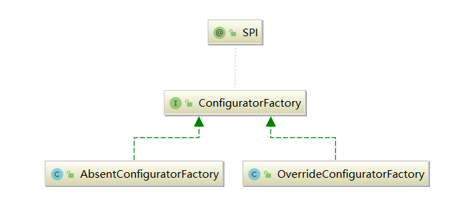
OverrideConfiguratorFactory 对应的扩展名为 override，创建的 Configurator 实现是 OverrideConfigurator
AbsentConfiguratorFactory 对应的扩展名是 absent，创建的 Configurator 实现类是 AbsentConfigurator。
LoadBalance（负载均衡）的职责是将网络请求或者其他形式的负载“均摊”到不同的服务节点上，从而避免服务集群中部分节点压力过大、资源紧张，而另一部分节点比较空闲的情况。
通过合理的负载均衡算法，可以让每个服务节点获取到适合自己处理能力的负载， 实现处理能力和流量的合理分配 。Dubbo 需要对 Consumer 的调用请求进行分配，避免少数 Provider 节点负载过大，而剩余的其他 Provider 节点处于空闲的状态。因为当 Provider 负载过大时，就会导致一部分请求超时、丢失等一系列问题发生，造成线上故障。
Dubbo 提供了 5 种负载均衡实现，分别是：
基于 Hash 一致性的 ConsistentHashLoadBalance；
基于权重随机算法的 RandomLoadBalance；
基于最少活跃调用数算法的 LeastActiveLoadBalance；
基于加权轮询算法的 RoundRobinLoadBalance；
基于最短响应时间的 ShortestResponseLoadBalance 。
Dubbo 提供的负载均衡实现，都是 LoadBalance 接口的实现类，如下图所示：
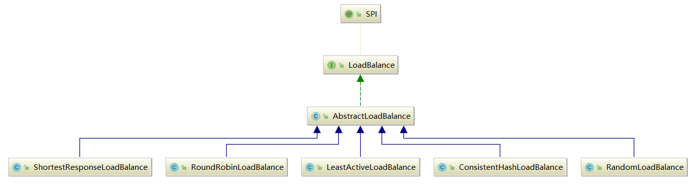
LoadBalance 是一个 SPI 扩展接口，默认使用的扩展实现是 RandomLoadBalance，其定义如下：
81// LoadBalance.java2
3(RandomLoadBalance.NAME)4public interface LoadBalance {5
6 ("loadbalance")7 <T> Invoker<T> select(List<Invoker<T>> invokers, URL url, Invocation invocation) throws RpcException;8}
@Adaptive注解参数为loadbalance，即动态生成的适配器会按照 URL 中的loadbalance参数值选择扩展实现类。LoadBalance 接口中select()方法的核心功能是根据传入的 URL 和 Invocation，以及自身的负载均衡算法，从 Invoker 集合中选择一个 Invoker 返回。
AbstractLoadBalance 抽象类并没有真正实现 select() 方法，只是对Invoker集合为空或是只包含一个 Invoker 对象的特殊情况进行了处理。另外，AbstractLoadBalance 还提供了一个 getWeight() 方法，该方法用于计算 Provider 权重，具体实现如下：
571// AbstractLoadBalance.java2
3public abstract class AbstractLoadBalance implements LoadBalance {4 /**5 * 预热降权6 */7 static int calculateWarmupWeight(int uptime, int warmup, int weight) {8 // 计算权重，随着服务运行时间uptime增大，权重ww的值会慢慢接近配置值weight9 int ww = (int) ( uptime / ((float) warmup / weight));10 return ww < 1 ? 1 : (Math.min(ww, weight));11 }12
13 14 public <T> Invoker<T> select(List<Invoker<T>> invokers, URL url, Invocation invocation) {15 // Invoker集合为空，直接返回null16 if (CollectionUtils.isEmpty(invokers)) {17 return null;18 }19 // Invoker集合只包含一个Invoker，则直接返回该Invoker对象20 if (invokers.size() == 1) {21 return invokers.get(0);22 }23 // doSelect是个抽象方法，留给子类具体实现24 return doSelect(invokers, url, invocation);25 }26
27 protected abstract <T> Invoker<T> doSelect(List<Invoker<T>> invokers, URL url, Invocation invocation);28
29 int getWeight(Invoker<?> invoker, Invocation invocation) {30 int weight;31 URL url = invoker.getUrl();32 // 如果是RegistryService接口的话，直接获取权重即可33 if (REGISTRY_SERVICE_REFERENCE_PATH.equals(url.getServiceInterface())) {34 weight = url.getParameter(REGISTRY_KEY + "." + WEIGHT_KEY, DEFAULT_WEIGHT);35 } else {36 weight = url.getMethodParameter(invocation.getMethodName(), WEIGHT_KEY, DEFAULT_WEIGHT);37 if (weight > 0) {38 // 获取服务提供者的启动时间戳39 long timestamp = invoker.getUrl().getParameter(TIMESTAMP_KEY, 0L);40 if (timestamp > 0L) {41 // 计算Provider运行时长42 long uptime = System.currentTimeMillis() - timestamp;43 if (uptime < 0) {44 return 1;45 }46 // 计算Provider预热时长47 int warmup = invoker.getUrl().getParameter(WARMUP_KEY, DEFAULT_WARMUP);48 // 如果Provider运行时间小于预热时间，则该Provider节点可能还在预热阶段，需要重新计算服务权重49 if (uptime > 0 && uptime < warmup) {50 weight = calculateWarmupWeight((int)uptime, warmup, weight);51 }52 }53 }54 }55 return Math.max(weight, 0);56 }57}上述的calculateWarmupWeight() 方法的目的是：对还在预热状态的 Provider 节点进行降权，避免 Provider 一启动就有大量请求涌进来。
服务预热 是一种常见的优化手段，这是由 JVM 本身的一些特性决定的，例如，JIT 等方面的优化，我们一般会在服务启动之后，让其在小流量状态下运行一段时间，然后再逐步放大流量。
ConsistentHashLoadBalance 底层是使用 一致性Hash算法 实现负载均衡。
基本思想：一致性 Hash 负载均衡可以让参数相同的请求每次都路由到相同的服务节点上，这种负载均衡策略可以在某些 Provider 节点下线的时候，让这些节点上的流量平摊到其他 Provider 上，不会引起流量的剧烈波动。
下面我通过一个示例，再来介绍下一致性 Hash 算法的原理：
假设现在有 1、2、3 三个 Provider 节点对外提供服务，有 100 个请求同时到达，如果想让请求尽可能均匀地分布到这三个 Provider 节点上，我们可能想到的最简单的方法就是 Hash 取模，即 hash(请求参数) % 3。如果参与 Hash 计算的是请求的全部参数，那么参数相同的请求将会落到同一个 Provider 节点上。不过此时如果突然有一个 Provider 节点出现宕机的情况，那我们就需要对 2 取模，即请求会重新分配到相应的 Provider 之上。在极端情况下，甚至会出现所有请求的处理节点都发生了变化，这就会造成比较大的波动。
为了避免因一个 Provider 节点宕机，而导致大量请求的处理节点发生变化的情况，我们可以考虑使用一致性 Hash 算法。 一致性 Hash 算法的原理也是取模算法，与 Hash 取模的不同之处在于：Hash 取模是对 Provider 节点数量取模，而一致性 Hash 算法是对 2^32 取模。
一致性 Hash 算法需要同时对 Provider 地址以及请求参数进行取模：
21hash(Provider地址) % 2^322hash(请求参数) % 2^32Provider 地址和请求经过对
2^32取模得到的结果值，都会落到一个 Hash 环上，如下图所示：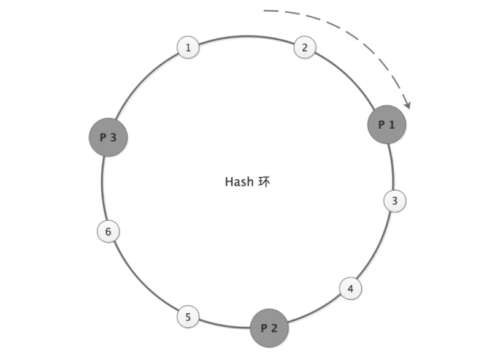
我们按顺时针的方向，依次将请求分发到对应的 Provider。这样，当某台 Provider 节点宕机或增加新的 Provider 节点时，只会影响这个 Provider 节点对应的请求。
在理想情况下，一致性 Hash 算法会将这三个 Provider 节点均匀地分布到 Hash 环上，请求也可以均匀地分发给这三个 Provider 节点。但在实际情况中，这三个 Provider 节点地址取模之后的值，可能差距不大，这样会导致大量的请求落到一个 Provider 节点上，如下图所示：
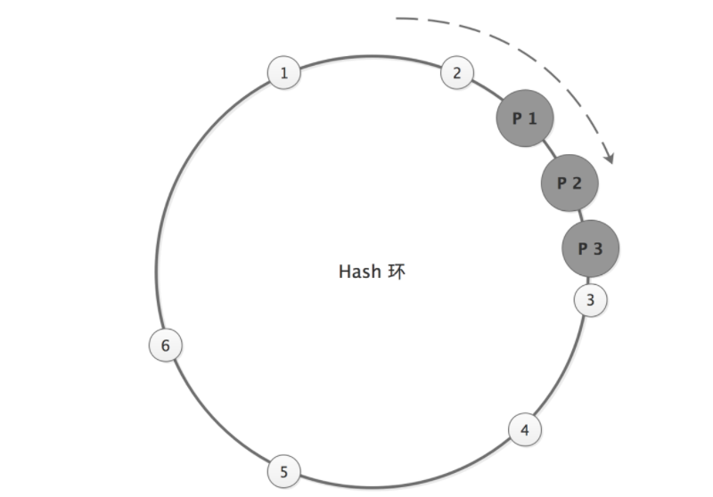
这就出现了数据倾斜的问题。 所谓数据倾斜是指由于节点不够分散，导致大量请求落到了同一个节点上，而其他节点只会接收到少量请求的情况 。
为了解决一致性 Hash 算法中出现的数据倾斜问题，演化出了 Hash槽 的概念。Hash 槽解决数据倾斜的思路是：既然问题是由 Provider 节点在 Hash 环上分布不均匀造成的，那么可以虚拟出 n 组 P1、P2、P3 的 Provider 节点 ，让多组 Provider 节点相对均匀地分布在 Hash 环上。如下图所示，相同阴影的节点均为同一个 Provider 节点，比如 P1-1、P1-2……P1-99 表示的都是 P1 这个 Provider 节点。引入 Provider 虚拟节点之后，让 Provider 在圆环上分散开来，以避免数据倾斜问题。
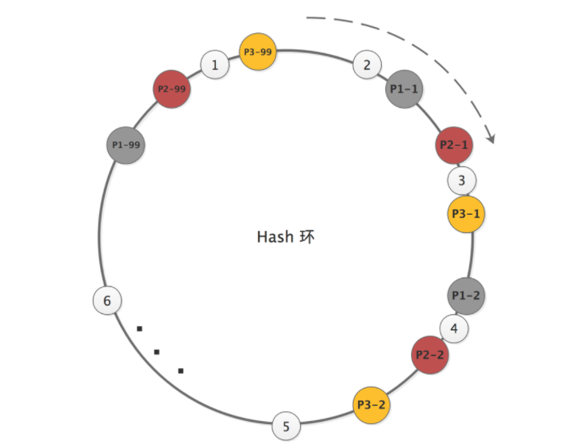
算法实现：
ConsistentHashLoadBalance.doSelect()方法，会根据 ServiceKey 和调用的方法名称选择一个 ConsistentHashSelector 对象， 核心算法都委托给 ConsistentHashSelector 对象完成。321// ConsistentHashLoadBalance.java2public class ConsistentHashLoadBalance extends AbstractLoadBalance {4public static final String NAME = "consistenthash";6public static final String HASH_NODES = "hash.nodes";7public static final String HASH_ARGUMENTS = "hash.arguments";8private final ConcurrentMap<String, ConsistentHashSelector<?>> selectors = new ConcurrentHashMap<String, ConsistentHashSelector<?>>();10protected <T> Invoker<T> doSelect(List<Invoker<T>> invokers, URL url, Invocation invocation) {13// 获取调用的方法名称14String methodName = RpcUtils.getMethodName(invocation);15// 将ServiceKey和方法名称拼接起来，构成一个key17String key = invokers.get(0).getUrl().getServiceKey() + "." + methodName;18// 用于感知invokers列表变化的hash值20int invokersHashCode = invokers.hashCode();21// 根据key获取对应的ConsistentHashSelector对象23ConsistentHashSelector<T> selector = (ConsistentHashSelector<T>) selectors.get(key);24// 未查找到ConsistentHashSelector对象，则进行创建25if (selector == null || selector.identityHashCode != invokersHashCode) {26selectors.put(key, new ConsistentHashSelector<T>(invokers, methodName, invokersHashCode));27selector = (ConsistentHashSelector<T>) selectors.get(key);28}29// 通过ConsistentHashSelector对象选择一个Invoker对象30return selector.select(invocation);31}32}来看下ConsistentHashSelector，它在创建时会在构造函数中完成Hash环的构建，Hash环是一个TreeMap结构，TreeMap的特点就是可以按照Key值有序遍历：
521// ConsistentHashSelector.java2private static final class ConsistentHashSelector<T> {4// 用于记录虚拟 Invoker 对象的 Hash 环，Key是Hash值，Value是Provider6private final TreeMap<Long, Invoker<T>> virtualInvokers;7// 虚拟 Invoker 个数9private final int replicaNumber;10// Invoker 集合的 HashCode 值12private final int identityHashCode;13// 需要参与 Hash 计算的参数索引。例如，argumentIndex = [0, 1, 2] 时，表示调用的目标方法的前三个参数要参与 Hash 计算15private final int[] argumentIndex;16ConsistentHashSelector(List<Invoker<T>> invokers, String methodName, int identityHashCode) {18// 初始化virtualInvokers字段，也就是虚拟Hash槽19this.virtualInvokers = new TreeMap<Long, Invoker<T>>();20// 该hashCode值用来判断Provider列表是否发生了变化22this.identityHashCode = identityHashCode;23URL url = invokers.get(0).getUrl();25// 从hash.nodes参数中获取虚拟节点的个数，默认16027this.replicaNumber = url.getMethodParameter(methodName, HASH_NODES, 160);28// 获取参与Hash计算的参数下标值，默认对第一个参数进行Hash运算30String[] index = COMMA_SPLIT_PATTERN.split(url.getMethodParameter(methodName, HASH_ARGUMENTS, "0"));31argumentIndex = new int[index.length];32for (int i = 0; i < index.length; i++) {33argumentIndex[i] = Integer.parseInt(index[i]);34}35// 遍历每一个Provider，构造虚拟槽37for (Invoker<T> invoker : invokers) {38String address = invoker.getUrl().getAddress();39// 每一个Provider构造 40 * 4 = 160 个虚拟槽41for (int i = 0; i < replicaNumber / 4; i++) {42// 对address + i进行md5运算，得到一个长度为16的字节数组43byte[] digest = md5(address + i);44for (int h = 0; h < 4; h++) {45long m = hash(digest, h);46virtualInvokers.put(m, invoker);47}48}49}50}51//...52}请求会通过
ConsistentHashSelector.select()方法选择合适的 Invoker 对象，其中会先对请求参数进行 md5 以及 Hash 运算，得到一个 Hash 值，然后再通过这个 Hash 值到 TreeMap 中查找目标 Invoker。具体实现如下：261// ConsistentHashSelector.java2public Invoker<T> select(Invocation invocation) {4// 将参与一致性Hash的参数拼接到一起6String key = toKey(invocation.getArguments());7// 计算key的Hash值9byte[] digest = md5(key);10// 匹配Invoker对象12return selectForKey(hash(digest, 0));13}14private Invoker<T> selectForKey(long hash) {16// 从TreeMap中查找第一个节点值大于或等于传入Hash值的Invoker对象18Map.Entry<Long, Invoker<T>> entry = virtualInvokers.ceilingEntry(hash);19// 如果Hash值大于Hash环中的所有Invoker，则回到Hash环的开头，返回第一个Invoker对象21if (entry == null) {22entry = virtualInvokers.firstEntry();23}24return entry.getValue();26}
RandomLoadBalance 使用的负载均衡算法是 加权随机算法 。RandomLoadBalance 也是 Dubbo 默认使用的 LoadBalance 实现。
基本思想：这里我通过一个示例来说明加权随机算法的核心思想。假设我们有三个 Provider 节点 A、B、C，它们对应的权重分别为 5、2、3，权重总和为 10。现在把这些权重值放到一维坐标轴上，
[0, 5)区间属于节点 A，[5, 7)区间属于节点 B，[7, 10)区间属于节点 C，如下图所示：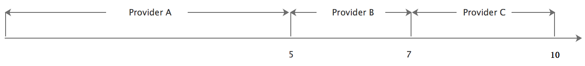
通过随机数生成器在
[0, 10)这个范围内生成一个随机数，然后计算这个随机数会落到哪个区间中。例如，随机生成 4，就会落到 Provider A 对应的区间中，此时 RandomLoadBalance 就会返回 Provider A 这个节点。
算法实现：其核心逻辑分为三个关键点：
计算每个 Invoker 对应的权重值以及总权重值；
当各个 Invoker 权重值不相等时，计算随机数应该落在哪个 Invoker 区间中，返回对应的 Invoker 对象；
当各个 Invoker 权重值相同时，随机返回一个 Invoker 即可。
471// RandomLoadBalance.java2public class RandomLoadBalance extends AbstractLoadBalance {4public static final String NAME = "random";6protected <T> Invoker<T> doSelect(List<Invoker<T>> invokers, URL url, Invocation invocation) {9int length = invokers.size();10boolean sameWeight = true;11// 保存每个Invoker对象的权重13int[] weights = new int[length];14// 计算第一个Invoker对象的权重16int firstWeight = getWeight(invokers.get(0), invocation);17weights[0] = firstWeight;18int totalWeight = firstWeight;20for (int i = 1; i < length; i++) {21// 计算每个Invoker对象的权重22int weight = getWeight(invokers.get(i), invocation);23weights[i] = weight;24// 总权重25totalWeight += weight;26// 检测每个Provider的权重是否相同27if (sameWeight && weight != firstWeight) {28sameWeight = false;29}30}31// 如果存在不一样权重的Invoker33if (totalWeight > 0 && !sameWeight) {34// 获取一个随机数，[0, totalWeight) 区间35int offset = ThreadLocalRandom.current().nextInt(totalWeight);36// 循环让offset数减去Invoker的权重值，当offset小于0时，返回相应的Invoker37for (int i = 0; i < length; i++) {38offset -= weights[i];39if (offset < 0) {40return invokers.get(i);41}42}43}44// 随机返回一个Invoker45return invokers.get(ThreadLocalRandom.current().nextInt(length));46}47}
LeastActiveLoadBalance使用的是 最小活跃数负载均衡算法 。它认为当前活跃请求数越小的Provider节点，剩余的处理能力越多，处理请求的效率也就越高，那么该 Provider 在单位时间内就可以处理更多的请求，所以我们应该优先将请求分配给该 Provider 节点。
算法实现：LeastActiveLoadBalance 需要配合 ActiveLimitFilter 使用，ActiveLimitFilter 会记录每个接口方法的活跃请求数，在 LeastActiveLoadBalance 进行负载均衡时，只会从活跃请求数最少的 Invoker 集合里挑选 Invoker。
在 LeastActiveLoadBalance 的实现中，首先会选出所有活跃请求数最小的 Invoker 对象，之后的逻辑与 RandomLoadBalance 完全一样，即按照这些 Invoker 对象的权重挑选最终的 Invoker 对象。下面是 LeastActiveLoadBalance.doSelect() 方法的具体实现：
921// LeastActiveLoadBalance.java2public class LeastActiveLoadBalance extends AbstractLoadBalance {4public static final String NAME = "leastactive";6protected <T> Invoker<T> doSelect(List<Invoker<T>> invokers, URL url, Invocation invocation) {9int length = invokers.size();10// 记录最小的活跃请求数12int leastActive = -1;13// 记录具有相同最小活跃请求数的Invoker个数15int leastCount = 0;16// 记录活跃请求数最小的Invoker在invokers数组中的下标位置18int[] leastIndexes = new int[length];19// 记录活跃请求数最小的Invoker集合中，每个Invoker的权重值21int[] weights = new int[length];22// 记录活跃请求数最小的Invoker集合中，所有Invoker的权重值之和24int totalWeight = 0;25// 记录活跃请求数最小的Invoker集合中，第一个Invoker的权重值27int firstWeight = 0;28// 活跃请求数最小的集合中，所有Invoker的权重值是否相同30boolean sameWeight = true;31// 遍历所有Invoker，获取活跃请求数最小的Invoker集合33for (int i = 0; i < length; i++) {34Invoker<T> invoker = invokers.get(i);35// 获取该Invoker的活跃请求数36int active = RpcStatus.getStatus(invoker.getUrl(), invocation.getMethodName()).getActive();37// 获取该Invoker的权重38int afterWarmup = getWeight(invoker, invocation);39weights[i] = afterWarmup;41// 当前Invoker是第一个活跃请求数最小的Invoker43if (leastActive == -1 || active < leastActive) {44// 重新记录最小的活跃请求数45leastActive = active;46// 重新记录活跃请求数最小的Invoker集合个数48leastCount = 1;49// 重新记录Invoker51leastIndexes[0] = i;52// 重新记录总权重值54totalWeight = afterWarmup;55// 该Invoker作为第一个Invoker，记录其权重值57firstWeight = afterWarmup;58// 重新记录是否权重值相等60sameWeight = true;61}62// 当前Invoker属于活跃请求数最小的Invoker集合63else if (active == leastActive) {64// 记录该Invoker的下标65leastIndexes[leastCount++] = i;66// 更新总权重67totalWeight += afterWarmup;68// 更新权重值是否相等69if (sameWeight && afterWarmup != firstWeight) {70sameWeight = false;71}72}73}74// 如果只有一个活跃请求数最小的Invoker对象，直接返回即可75if (leastCount == 1) {76return invokers.get(leastIndexes[0]);77}78// 按照RandomLoadBalance的逻辑，从活跃请求数最小的Invoker集合中，随机选择一个Invoker对象返回80if (!sameWeight && totalWeight > 0) {81int offsetWeight = ThreadLocalRandom.current().nextInt(totalWeight);82for (int i = 0; i < leastCount; i++) {83int leastIndex = leastIndexes[i];84offsetWeight -= weights[leastIndex];85if (offsetWeight < 0) {86return invokers.get(leastIndex);87}88}89}90return invokers.get(leastIndexes[ThreadLocalRandom.current().nextInt(leastCount)]);91}92}
RoundRobinLoadBalance 实现的是 加权轮询负载均衡算法 。
轮询指的是将请求轮流分配给每个 Provider。例如，有 A、B、C 三个 Provider 节点，按照普通轮询的方式，我们会将第一个请求分配给 Provider A，将第二个请求分配给 Provider B，第三个请求分配给 Provider C，第四个请求再次分配给 Provider A……如此循环往复。
基本思想：轮询是一种无状态负载均衡算法，实现简单，适用于集群中所有 Provider 节点性能相近的场景。 但现实情况中就很难保证这一点了，因为很容易出现集群中性能最好和最差的 Provider 节点处理同样流量的情况，这就可能导致性能差的 Provider 节点各方面资源非常紧张，甚至无法及时响应了，但是性能好的 Provider 节点的各方面资源使用还较为空闲。这时我们可以通过加权轮询的方式，降低分配到性能较差的 Provider 节点的流量。
加权之后，分配给每个 Provider 节点的流量比会接近或等于它们的权重比。例如，Provider 节点 A、B、C 权重比为 5:1:1，那么在 7 次请求中，节点 A 将收到 5 次请求，节点 B 会收到 1 次请求，节点 C 则会收到 1 次请求。
注意：在 Dubbo
2.6.4版本及之前，RoundRobinLoadBalance 的实现存在一些问题，例如，选择 Invoker 的性能问题、负载均衡时不够平滑等。在 Dubbo2.6.5版本之后，这些问题都得到了修复，所以这里我只介绍最新的 RoundRobinLoadBalance 实现。
算法实现：每个 Provider 节点有两个权重：
一个权重是配置的
weight，该值在负载均衡的过程中不会变化；另一个权重是
currentWeight，该值会在负载均衡的过程中动态调整，初始值为 0。
当有新的请求进来时，RoundRobinLoadBalance 会遍历 Invoker 列表，并用对应的
currentWeight加上其配置的权重。遍历完成后，再找到最大的currentWeight，将其减去权重总和，然后返回相应的 Invoker 对象。下面通过一个示例说明 RoundRobinLoadBalance 的执行流程，这里我们依旧假设 A、B、C 三个节点的权重比例为 5:1:1。
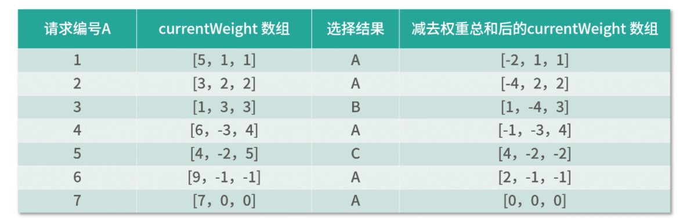
处理第一个请求，currentWeight 数组中的权重与配置的 weight 相加，即从 [0, 0, 0] 变为 [5, 1, 1]。接下来，从中选择权重最大的 Invoker 作为结果，即节点 A。最后，将节点 A 的 currentWeight 值减去 totalWeight 值，最终得到 currentWeight 数组为 [-2, 1, 1]；
处理第二个请求，currentWeight 数组中的权重与配置的 weight 相加，即从 [-2, 1, 1] 变为 [3, 2, 2]。接下来，从中选择权重最大的 Invoker 作为结果，即节点 A。最后，将节点 A 的 currentWeight 值减去 totalWeight 值，最终得到 currentWeight 数组为 [-4, 2, 2]；
处理第三个请求，currentWeight 数组中的权重与配置的 weight 相加，即从 [-4, 2, 2] 变为 [1, 3, 3]。接下来，从中选择权重最大的 Invoker 作为结果，即节点 B。最后，将节点 B 的 currentWeight 值减去 totalWeight 值，最终得到 currentWeight 数组为 [1, -4, 3]；
处理第四个请求，currentWeight 数组中的权重与配置的 weight 相加，即从 [1, -4, 3] 变为 [6, -3, 4]。接下来，从中选择权重最大的 Invoker 作为结果，即节点 A。最后，将节点 A 的 currentWeight 值减去 totalWeight 值，最终得到 currentWeight 数组为 [-1, -3, 4]；
处理第五个请求，currentWeight 数组中的权重与配置的 weight 相加，即从 [-1, -3, 4] 变为 [4, -2, 5]。接下来，从中选择权重最大的 Invoker 作为结果，即节点 C。最后，将节点 C 的 currentWeight 值减去 totalWeight 值，最终得到 currentWeight 数组为 [4, -2, -2]；
处理第六个请求，currentWeight 数组中的权重与配置的 weight 相加，即从 [4, -2, -2] 变为 [9, -1, -1]。接下来，从中选择权重最大的 Invoker 作为结果，即节点 A。最后，将节点 A 的 currentWeight 值减去 totalWeight 值，最终得到 currentWeight 数组为 [2, -1, -1]；
处理第七个请求，currentWeight 数组中的权重与配置的 weight 相加，即从 [2, -1, -1] 变为 [7, 0, 0]。接下来，从中选择权重最大的 Invoker 作为结果，即节点 A。最后，将节点 A 的 currentWeight 值减去 totalWeight 值，最终得到 currentWeight 数组为 [0, 0, 0]。
注意：在 Dubbo
2.6.4版本中，上面示例的一次轮询结果是 [A, A, A, A, A, B, C]，也就是说前 5 个请求会全部都落到 A 这个节点上。这将会使节点 A 在短时间内接收大量的请求，压力陡增，而节点 B 和节点 C 此时没有收到任何请求，处于完全空闲的状态，这种“瞬间分配不平衡”的情况也就是前面提到的“不平滑问题”。
在 RoundRobinLoadBalance 中，每个 Invoker 对象都有一个对应的 WeightedRoundRobin 对象，用来记录配置的权重（weight 字段）以及随每次负载均衡算法执行变化的 current 权重（current 字段）：
321// RoundRobinLoadBalance.WeightedRoundRobin.java2protected static class WeightedRoundRobin {4private int weight;5private AtomicLong current = new AtomicLong(0);6private long lastUpdate;7public int getWeight() {9return weight;10}11public void setWeight(int weight) {13this.weight = weight;14current.set(0);15}16public long increaseCurrent() {18return current.addAndGet(weight);19}20public void sel(int total) {22current.addAndGet(-1 * total);23}24public long getLastUpdate() {26return lastUpdate;27}28public void setLastUpdate(long lastUpdate) {30this.lastUpdate = lastUpdate;31}32}RoundRobinLoadBalance.doSelect() 方法的具体实现：
691// RoundRobinLoadBalance.java2public class RoundRobinLoadBalance extends AbstractLoadBalance {4public static final String NAME = "roundrobin";5private static final int RECYCLE_PERIOD = 60000;7private ConcurrentMap<String, ConcurrentMap<String, WeightedRoundRobin>> methodWeightMap = new ConcurrentHashMap<String, ConcurrentMap<String, WeightedRoundRobin>>();9protected <T> Collection<String> getInvokerAddrList(List<Invoker<T>> invokers, Invocation invocation) {11String key = invokers.get(0).getUrl().getServiceKey() + "." + invocation.getMethodName();12Map<String, WeightedRoundRobin> map = methodWeightMap.get(key);13if (map != null) {14return map.keySet();15}16return null;17}18protected <T> Invoker<T> doSelect(List<Invoker<T>> invokers, URL url, Invocation invocation) {21String key = invokers.get(0).getUrl().getServiceKey() + "." + invocation.getMethodName();22// 获取整个Invoker列表对应的WeightedRoundRobin映射表，如果为空，则创建一个新的WeightedRoundRobin映射表24ConcurrentMap<String, WeightedRoundRobin> map = methodWeightMap.computeIfAbsent(key, k -> new ConcurrentHashMap<>());25int totalWeight = 0;26long maxCurrent = Long.MIN_VALUE;27// 获取当前时间28long now = System.currentTimeMillis();29Invoker<T> selectedInvoker = null;30WeightedRoundRobin selectedWRR = null;31for (Invoker<T> invoker : invokers) {32String identifyString = invoker.getUrl().toIdentityString();33int weight = getWeight(invoker, invocation);34// 检测当前Invoker是否有相应的WeightedRoundRobin对象，没有则进行创建35WeightedRoundRobin weightedRoundRobin = map.computeIfAbsent(identifyString, k -> {36WeightedRoundRobin wrr = new WeightedRoundRobin();37wrr.setWeight(weight);38return wrr;39});40// 检测Invoker权重是否发生了变化，若发生变化，则更新WeightedRoundRobin的weight字段42if (weight != weightedRoundRobin.getWeight()) {43weightedRoundRobin.setWeight(weight);44}45// 让currentWeight加上配置的Weight46long cur = weightedRoundRobin.increaseCurrent();47// 设置lastUpdate字段48weightedRoundRobin.setLastUpdate(now);49// 寻找具有最大currentWeight的Invoker，以及Invoker对应的WeightedRoundRobin50if (cur > maxCurrent) {51maxCurrent = cur;52selectedInvoker = invoker;53selectedWRR = weightedRoundRobin;54}55// 计算权重总和56totalWeight += weight;57}58if (invokers.size() != map.size()) {59map.entrySet().removeIf(item -> now - item.getValue().getLastUpdate() > RECYCLE_PERIOD);60}61if (selectedInvoker != null) {62// 用currentWeight减去totalWeight63selectedWRR.sel(totalWeight);64// 返回选中的Invoker对象65return selectedInvoker;66}67return invokers.get(0);68}69}
ShortestResponseLoadBalance 是 Dubbo 2.7 版本之后新增加的一个 LoadBalance 实现类 。它实现了 最短响应时间的负载均衡算法 ，也就是从多个 Provider 节点中选出调用成功的且响应时间最短的 Provider 节点，不过满足该条件的 Provider 节点可能有多个，所以还要再使用随机算法进行一次选择，得到最终要调用的 Provider 节点。
算法实现：ShortestResponseLoadBalance.doSelect() 方法的核心实现
871// ShortestResponseLoadBalance.java2public class ShortestResponseLoadBalance extends AbstractLoadBalance {4public static final String NAME = "shortestresponse";6protected <T> Invoker<T> doSelect(List<Invoker<T>> invokers, URL url, Invocation invocation) {9// 记录Invoker集合的数量10int length = invokers.size();11// 用于记录所有Invoker集合中最短响应时间13long shortestResponse = Long.MAX_VALUE;14// 具有相同最短响应时间的Invoker个数16int shortestCount = 0;17// 存放所有最短响应时间的Invoker的下标19int[] shortestIndexes = new int[length];20// 存储每个Invoker的权重22int[] weights = new int[length];23// 存储权重总和25int totalWeight = 0;26// 记录第一个Invoker对象的权重28int firstWeight = 0;29// 最短响应时间Invoker集合中的Invoker权重是否相同31boolean sameWeight = true;32// Filter out all the shortest response invokers34for (int i = 0; i < length; i++) {35Invoker<T> invoker = invokers.get(i);36RpcStatus rpcStatus = RpcStatus.getStatus(invoker.getUrl(), invocation.getMethodName());37// 获取调用成功的平均时间:调用成功的请求数总数对应的总耗时 / 调用成功的请求数总数39long succeededAverageElapsed = rpcStatus.getSucceededAverageElapsed();40// 获取的是该Provider当前的活跃请求数，也就是当前正在处理的请求数42int active = rpcStatus.getActive();43// 计算处理一个新请求的预估值，也就是如果当前请求发给这个Provider，大概耗时多久处理完成45long estimateResponse = succeededAverageElapsed * active;46// 计算该Invoker的权重（主要是处理预热）48int afterWarmup = getWeight(invoker, invocation);49weights[i] = afterWarmup;50// 第一次找到Invoker集合中最短响应耗时的Invoker对象，记录其相关信息52if (estimateResponse < shortestResponse) {53shortestResponse = estimateResponse;54shortestCount = 1;55shortestIndexes[0] = i;56totalWeight = afterWarmup;57firstWeight = afterWarmup;58sameWeight = true;59}60// 出现多个耗时最短的Invoker对象61else if (estimateResponse == shortestResponse) {62shortestIndexes[shortestCount++] = i;63totalWeight += afterWarmup;64if (sameWeight && i > 0 && afterWarmup != firstWeight) {65sameWeight = false;66}67}68}69if (shortestCount == 1) {70return invokers.get(shortestIndexes[0]);71}72// 如果耗时最短的所有Invoker对象的权重不相同，则通过加权随机负载均衡的方式选择一个Invoker返回74if (!sameWeight && totalWeight > 0) {75int offsetWeight = ThreadLocalRandom.current().nextInt(totalWeight);76for (int i = 0; i < shortestCount; i++) {77int shortestIndex = shortestIndexes[i];78offsetWeight -= weights[shortestIndex];79if (offsetWeight < 0) {80return invokers.get(shortestIndex);81}82}83}84// 如果耗时最短的所有Invoker对象的权重相同，则随机返回一个85return invokers.get(shortestIndexes[ThreadLocalRandom.current().nextInt(shortestCount)]);86}87}
Cluster 接口提供了集群容错功能。集群中的单个节点有一定概率出现一些问题，例如，磁盘损坏、系统崩溃等，导致节点无法对外提供服务，因此在分布式 RPC 框架中，为了避免单点故障，Provider 通常至少会部署在两台服务器上，以集群的形式对外提供服务，对于一些负载比较高的服务，则需要部署更多 Provider 来抗住流量。
在 Dubbo 中，通过 Cluster 这个接口把一组可供调用的 Provider 信息组合成为一个统一的 Invoker 供调用方进行调用。经过 Router 过滤、LoadBalance 选址之后，选中一个具体 Provider 进行调用， 如果调用失败，则会按照集群的容错策略进行容错处理 。
Dubbo 默认内置了若干容错策略，我们也可以自定义容错策略。
Dubbo 中常见的容错方式有如下几种： Failover Cluster： 失败自动切换。Dubbo 的默认容错机制，在请求一个 Provider 节点失败时，自动切换其他 Provider 节点，默认执行 3 次，适合幂等操作。当然，重试次数越多，在故障容错的时候带给 Provider 的压力就越大，在极端情况下甚至可能造成雪崩；
Failback Cluster： 失败自动恢复。失败后记录到队列中，通过定时器重试；
Failfast Cluster： 快速失败。请求失败后返回异常，不进行任何重试；
Failsafe Cluster： 失败安全。请求失败后忽略异常，不进行任何重试；
Forking Cluster： 并行调用多个 Provider 节点，只要有一个成功就返回；
Broadcast Cluster： 广播多个 Provider 节点，只要有一个节点失败就失败；
Available Cluster： 遍历所有的 Provider 节点，找到每一个可用的节点，就直接调用。如果没有可用的 Provider 节点，则直接抛出异常；
Mergeable Cluster： 请求多个 Provider 节点并将得到的结果进行合并。
Cluster 的容错处理流程大致可以分为两步：
创建 Cluster Invoker 实例：在 Consumer 初始化时，Cluster 实现类会创建一个 Cluster Invoker 实例；
使用 Cluster Invoker 实例：在 Consumer 发起服务调用时，Cluster Invoker 会依赖 Directory、Router、LoadBalance 等组件得到最终要调用的 Invoker 对象：
通过 Directory 获取 Invoker 列表，以 RegistryDirectory 为例，会感知注册中心的动态变化，实时获取当前 Provider 对应的 Invoker 集合；
调用 Router 的 route() 方法进行路由，过滤掉不符合路由规则的 Invoker 对象；
通过 LoadBalance 从 Invoker 列表中选择一个 Invoker；
ClusterInvoker 会将参数传给 LoadBalance 选择出的 Invoker 实例的 invoke 方法，进行真正的远程调用。
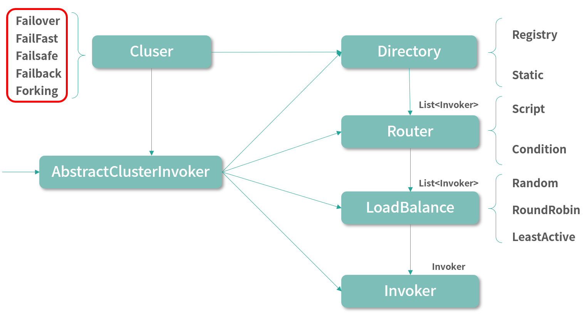
Cluster 接口是一个扩展接口，通过 @SPI 注解的参数，我们知道其使用的默认实现是 FailoverCluster ，它只定义了一个 join() 方法，在其上添加了 @Adaptive 注解，会动态生成适配器类，其中会优先根据 Directory.getUrl() 方法返回的 URL 中的 cluster 参数值选择扩展实现，若无 cluster 参数则使用默认的 FailoverCluster 实现：
71// Cluster.java2
3(FailoverCluster.NAME)4public interface Cluster {5 6 <T> Invoker<T> join(Directory<T> directory) throws RpcException;7}Cluster 接口的实现类如下图所示，分别对应前面提到的多种容错策略：
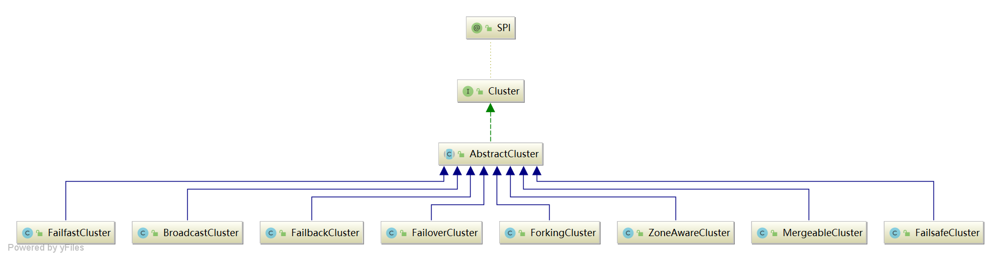
每个 Cluster 接口的实现类，都会创建对应的 Invoker 对象，这些都继承自 AbstractClusterInvoker 抽象类，如下图所示：
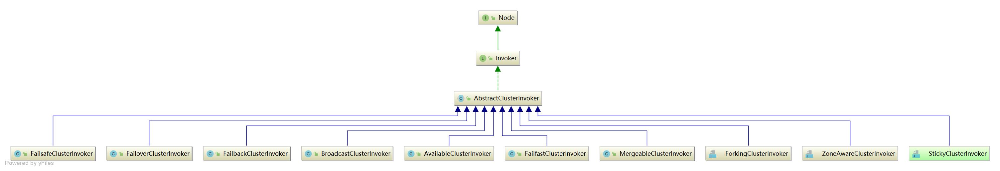
通过上面两张继承关系图，我们可以看出，Cluster 接口和 Invoker 接口都会有相应的抽象实现类，这些抽象实现类都实现了一些公共能力。下面我就来深入介绍 AbstractClusterInvoker 和 AbstractCluster 这两个抽象类。
核心功能包含两点：
实现 Invoker 接口，对 Invoker.invoke() 方法进行通用的抽象实现；
实现通用的负载均衡算法，供子类继承调用。
invoke方法：在 AbstractClusterInvoker.invoke() 方法中，会通过 Directory 获取 Invoker 列表，然后通过 SPI 初始化 LoadBalance，最后调用 doInvoke() 方法执行子类的逻辑：
271// AbstractClusterInvoker.java2public Result invoke(final Invocation invocation) throws RpcException {4// 检测当前Invoker是否已销毁5checkWhetherDestroyed();6// 将RpcContext中的attachment添加到Invocation中8Map<String, Object> contextAttachments = RpcContext.getContext().getObjectAttachments();9if (contextAttachments != null && contextAttachments.size() != 0) {10((RpcInvocation) invocation).addObjectAttachments(contextAttachments);11}12// 通过Directory获取Invoker对象列表 ---往下看---14List<Invoker<T>> invokers = list(invocation);15// 通过SPI加载LoadBalance17LoadBalance loadbalance = initLoadBalance(invokers, invocation);18RpcUtils.attachInvocationIdIfAsync(getUrl(), invocation);19// 调用doInvoke()方法，该方法是个抽象方法21return doInvoke(invocation, invokers, loadbalance);22}23protected List<Invoker<T>> list(Invocation invocation) throws RpcException {25// Directory.list() 方法返回 Invoker 集合之前，已经使用 Router 进行了一次筛选26return directory.list(invocation);27}
select方法：根据配置决定是否开启 粘滞连接 特性：
如果开启，则需要将上次使用的 Invoker 缓存起来，只要 Provider 节点可用就直接调用，不会再进行负载均衡。如果调用失败，才会重新进行负载均衡，并且排除已经重试过的 Provider 节点。
461// AbstractClusterInvoker.java2/**4* 使用负载均衡策略选择一个LoadBalance5*6* @param loadbalance 此次使用的LoadBalance实现7* @param invocation 此次服务调用的上下文信息8* @param invokers 待选择的Invoker集合9* @param selected 记录负载均衡已经选出来、尝试过的Invoker集合10*/11protected Invoker<T> select(LoadBalance loadbalance, Invocation invocation,12List<Invoker<T>> invokers, List<Invoker<T>> selected) throws RpcException {13if (CollectionUtils.isEmpty(invokers)) {14return null;15}16// 获取调用方法名17String methodName = invocation == null ? StringUtils.EMPTY_STRING : invocation.getMethodName();18// sticky表示粘滞连接，所谓粘滞连接是指Consumer会尽可能地调用同一个Provider节点，除非这个Provider无法提供服务20boolean sticky = invokers.get(0).getUrl()21.getMethodParameter(methodName, CLUSTER_STICKY_KEY, DEFAULT_CLUSTER_STICKY);22// 检测invokers列表是否包含sticky Invoker，如果不包含说明stickyInvoker代表的服务提供者挂了，此时需要将其置空24if (stickyInvoker != null && !invokers.contains(stickyInvoker)) {25stickyInvoker = null;26}27// 如果开启了粘滞连接特性，需要先判断这个Provider节点是否已经重试过了29if (sticky && stickyInvoker != null && (selected == null || !selected.contains(stickyInvoker))) {30// 检测当前stickyInvoker是否可用，如果可用，直接返回stickyInvoker31if (availablecheck && stickyInvoker.isAvailable()) {32return stickyInvoker;33}34}35// ---往下看---37// 调用doSelect选择新的Invoker对象38Invoker<T> invoker = doSelect(loadbalance, invocation, invokers, selected);39// ---end---40// 是否开启粘滞，更新stickyInvoker字段42if (sticky) {43stickyInvoker = invoker;44}45return invoker;46}
doSelect方法：
通过 LoadBalance 选择 Invoker 对象；
如果选出来的 Invoker 不稳定或不可用，会调用 reselect() 方法进行重选。
441// AbstractClusterInvoker.java2private Invoker<T> doSelect(LoadBalance loadbalance, Invocation invocation,4List<Invoker<T>> invokers, List<Invoker<T>> selected) throws RpcException {5// 判断是否需要进行负载均衡，Invoker集合为空，直接返回null7if (CollectionUtils.isEmpty(invokers)) {8return null;9}10// 只有一个Invoker对象，直接返回即可12if (invokers.size() == 1) {13return invokers.get(0);14}15// 通过LoadBalance实现选择Invoker对象17Invoker<T> invoker = loadbalance.select(invokers, getUrl(), invocation);18// 如果LoadBalance选出的Invoker对象，已经尝试过请求了或不可用，则需要调用reselect()方法重选20if ((selected != null && selected.contains(invoker)) // Invoker已经尝试调用过了，但是失败了21|| (!invoker.isAvailable() && getUrl() != null && availablecheck) // Invoker不可用22) {23try {24// 调用reselect()方法重选25Invoker<T> rInvoker = reselect(loadbalance, invocation, invokers, selected, availablecheck);26// 如果重选的Invoker对象不为空，则直接返回这个 rInvoker28if (rInvoker != null) {29invoker = rInvoker;30} else {31int index = invokers.indexOf(invoker);32try {33// 如果重选的Invoker对象为空，则返回该Invoker的下一个Invoker对象34invoker = invokers.get((index + 1) % invokers.size());35} catch (Exception e) {36logger.warn("...");37}38}39} catch (Throwable t) {40logger.error("...");41}42}43return invoker;44}reselect方法：eselect() 方法会重新进行一次负载均衡，首先对未尝试过的可用 Invokers 进行负载均衡，如果已经全部重试过了，则将尝试过的 Provider 节点过滤掉，然后在可用的 Provider 节点中重新进行负载均衡。
361// AbstractClusterInvoker.java2private Invoker<T> reselect(LoadBalance loadbalance, Invocation invocation, List<Invoker<T>> invokers, List<Invoker<T>> selected, boolean availablecheck) throws RpcException {4// 用于记录要重新进行负载均衡的Invoker集合6List<Invoker<T>> reselectInvokers = new ArrayList<>(7invokers.size() > 1 ? (invokers.size() - 1) : invokers.size());8// 将不在selected集合中的Invoker过滤出来进行负载均衡10for (Invoker<T> invoker : invokers) {11if (availablecheck && !invoker.isAvailable()) {12continue;13}14if (selected == null || !selected.contains(invoker)) {15reselectInvokers.add(invoker);16}17}18// reselectInvokers不为空时，才需要通过负载均衡组件进行选择20if (!reselectInvokers.isEmpty()) {21return loadbalance.select(reselectInvokers, getUrl(), invocation);22}23// 只能对selected集合中可用的Invoker再次进行负载均衡25if (selected != null) {26for (Invoker<T> invoker : selected) {27if ((invoker.isAvailable()) && !reselectInvokers.contains(invoker)) {28reselectInvokers.add(invoker);29}30}31}32if (!reselectInvokers.isEmpty()) {33return loadbalance.select(reselectInvokers, getUrl(), invocation);34}35return null;36}
Cluster 扩展实现都继承了 AbstractCluster 抽象类。AbstractCluster 抽象类的核心逻辑是在 ClusterInvoker 外层包装一层 ClusterInterceptor，从而实现类似切面的效果。
251// AbstractCluster.java2
3public <T> Invoker<T> join(Directory<T> directory) throws RpcException {5 // 扩展名称由reference.interceptor参数确定6 return buildClusterInterceptors(doJoin(directory), directory.getUrl().getParameter(REFERENCE_INTERCEPTOR_KEY));7}8
9private <T> Invoker<T> buildClusterInterceptors(AbstractClusterInvoker<T> clusterInvoker, String key) {10
11 AbstractClusterInvoker<T> last = clusterInvoker;12
13 // 通过SPI方式加载ClusterInterceptor扩展实现14 List<ClusterInterceptor> interceptors = ExtensionLoader.getExtensionLoader(ClusterInterceptor.class).getActivateExtension(clusterInvoker.getUrl(), key);15
16 if (!interceptors.isEmpty()) {17 for (int i = interceptors.size() - 1; i >= 0; i--) {18 // 将InterceptorInvokerNode首尾连接到一起，形成调用链19 final ClusterInterceptor interceptor = interceptors.get(i);20 final AbstractClusterInvoker<T> next = last;21 last = new InterceptorInvokerNode<>(clusterInvoker, interceptor, next);22 }23 }24 return last;25}
上述AbstractCluster 抽象类的 join() 方法实现逻辑如下：
首先，调用 doJoin() 方法获取最终要调用的 Invoker 对象，doJoin() 是个抽象方法，由 AbstractCluster 子类根据具体的策略进行实现；
接着，调用
buildClusterInterceptors()方法加载 ClusterInterceptor 扩展实现类，对 Invoker 对象进行包装。
ClusterInterceptor：是一个拦截器接口，下面是 ClusterInterceptor 接口的定义：
221// ClusterInterceptor.java2public interface ClusterInterceptor {5// 前置拦截方法7void before(AbstractClusterInvoker<?> clusterInvoker, Invocation invocation);8// 后置拦截方法10void after(AbstractClusterInvoker<?> clusterInvoker, Invocation invocation);11// 调用ClusterInvoker的invoke()方法完成请求13default Result intercept(AbstractClusterInvoker<?> clusterInvoker, Invocation invocation) throws RpcException {14return clusterInvoker.invoke(invocation);15}16// 这个Listener用来监听请求的正常结果以及异常18interface Listener {19void onMessage(Result appResponse, AbstractClusterInvoker<?> clusterInvoker, Invocation invocation);20void onError(Throwable t, AbstractClusterInvoker<?> clusterInvoker, Invocation invocation);21}22}Dubbo 提供了两个 ClusterInterceptor 实现类，分别是 ConsumerContextClusterInterceptor 和 ZoneAwareClusterInterceptor ，如下图所示：
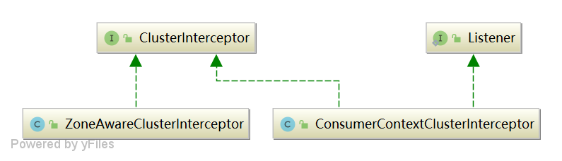
在 ConsumerContextClusterInterceptor 的 before() 方法中，会在 RpcContext 中设置当前 Consumer 地址、此次调用的 Invoker 等信息，同时还会删除之前与当前线程绑定的 Server Context。在 after() 方法中，会删除本地 RpcContext 的信息。ConsumerContextClusterInterceptor 的具体实现如下：
181// ConsumerContextClusterInterceptor.java2public void before(AbstractClusterInvoker<?> invoker, Invocation invocation) {4// 获取当前线程绑定的RpcContext5RpcContext context = RpcContext.getContext();6// 设置Invoker、Consumer地址等信息 context.setInvocation(invocation).setLocalAddress(NetUtils.getLocalHost(), 0);8if (invocation instanceof RpcInvocation) {9((RpcInvocation) invocation).setInvoker(invoker);10}11RpcContext.removeServerContext();13}14public void after(AbstractClusterInvoker<?> clusterInvoker, Invocation invocation) {16// 删除本地RpcContext的信息17RpcContext.removeContext(true);18}
ConsumerContextClusterInterceptor 同时继承了 ClusterInterceptor.Listener 接口，在其 onMessage() 方法中，会获取响应中的 attachments 并设置到 RpcContext 中的 SERVER_LOCAL 之中，具体实现如下：
61// ConsumerContextClusterInterceptor.java2public void onMessage(Result appResponse, AbstractClusterInvoker<?> invoker, Invocation invocation) {4// 从AppResponse中获取attachment，并设置到SERVER_LOCAL这个RpcContext中5RpcContext.getServerContext().setObjectAttachments(appResponse.getObjectAttachments());6}
ZoneAwareClusterInterceptor 的 before() 方法中，会从 RpcContext 中获取多注册中心相关的参数并设置到 Invocation 中（主要是 registry_zone 参数和 registry_zone_force 参数，这两个参数的具体含义，在后面分析 ZoneAwareClusterInvoker 时详细介绍），ZoneAwareClusterInterceptor 的 after() 方法为空实现。ZoneAwareClusterInterceptor 的具体实现如下：
301// ZoneAwareClusterInterceptor.java2public void before(AbstractClusterInvoker<?> clusterInvoker, Invocation invocation) {4RpcContext rpcContext = RpcContext.getContext();6// 从RpcContext中获取registry_zone参数和registry_zone_force参数8String zone = (String) rpcContext.getAttachment(REGISTRY_ZONE);9String force = (String) rpcContext.getAttachment(REGISTRY_ZONE_FORCE);10// 检测用户是否提供了ZoneDetector接口的扩展实现12ExtensionLoader<ZoneDetector> loader = ExtensionLoader.getExtensionLoader(ZoneDetector.class);13if (StringUtils.isEmpty(zone) && loader.hasExtension("default")) {15ZoneDetector detector = loader.getExtension("default");16zone = detector.getZoneOfCurrentRequest(invocation);17force = detector.isZoneForcingEnabled(invocation, zone);18}19// 将registry_zone参数和registry_zone_force参数设置到Invocation中21if (StringUtils.isNotEmpty(zone)) {22invocation.setAttachment(REGISTRY_ZONE, zone);23}24if (StringUtils.isNotEmpty(force)) {26invocation.setAttachment(REGISTRY_ZONE_FORCE, force);27}28}29/// 注意：ZoneAwareClusterInterceptor 没有实现 ClusterInterceptor.Listener 接口，也就是不提供监听响应的功能。
InterceptorInvokerNode：InterceptorInvokerNode 会将底层的 AbstractClusterInvoker 对象以及关联的 ClusterInterceptor 对象封装到一起，还会维护一个 next 引用，指向下一个 InterceptorInvokerNode 对象。
在 InterceptorInvokerNode.invoke()：会先调用 ClusterInterceptor 的前置逻辑，然后执行 intercept() 方法调用 AbstractClusterInvoker 的 invoke() 方法完成远程调用，最后执行 ClusterInterceptor 的后置逻辑。具体实现如下：
361// InterceptorInvokerNode.java2public Result invoke(Invocation invocation) throws RpcException {4Result asyncResult;6try {8// 前置逻辑9interceptor.before(next, invocation);10// 执行invoke()方法完成远程调用12asyncResult = interceptor.intercept(next, invocation);13} catch (Exception e) {14if (interceptor instanceof ClusterInterceptor.Listener) {15// 出现异常时，会触发监听器的onError()方法16ClusterInterceptor.Listener listener = (ClusterInterceptor.Listener) interceptor;17listener.onError(e, clusterInvoker, invocation);18}19throw e;20} finally {21// 执行后置逻辑22interceptor.after(next, invocation);23}24return asyncResult.whenCompleteWithContext((r, t) -> {26if (interceptor instanceof ClusterInterceptor.Listener) {27ClusterInterceptor.Listener listener = (ClusterInterceptor.Listener) interceptor;28if (t == null) {29// 正常返回时，会调用onMessage()方法触发监听器30listener.onMessage(r, clusterInvoker, invocation);31} else {32listener.onError(t, clusterInvoker, invocation);33}34}35});36}
Failover Cluster ，失败自动切换。Dubbo 的默认容错机制，在请求一个 Provider 节点失败时，自动切换其他 Provider 节点，默认执行 3 次，适合幂等操作。当然，重试次数越多，在故障容错的时候带给 Provider 的压力就越大，在极端情况下甚至可能造成雪崩。
FailoverCluster：FailoverCluster的doJoin() 方法中会创建一个 FailoverClusterInvoker 对象并返回，具体实现如下：
111// FailoverCluster.java2
3public class FailoverCluster extends AbstractCluster {4
5 public final static String NAME = "failover";6
7 8 public <T> AbstractClusterInvoker<T> doJoin(Directory<T> directory) throws RpcException {9 return new FailoverClusterInvoker<>(directory);10 }11}FailoverClusterInvoker：FailoverClusterInvoker 会在调用失败的时候，自动切换 Invoker 进行重试。下面来看 FailoverClusterInvoker 的核心实现：
651// FailoverClusterInvoker.java2
3public class FailoverClusterInvoker<T> extends AbstractClusterInvoker<T> {4
5 6 public Result doInvoke(Invocation invocation, final List<Invoker<T>> invokers, LoadBalance loadbalance) throws RpcException {7 List<Invoker<T>> copyInvokers = invokers;8 // 检查copyInvokers集合是否为空，如果为空会抛出异常9 checkInvokers(copyInvokers, invocation);10
11 String methodName = RpcUtils.getMethodName(invocation);12
13 // 参数重试次数，默认重试2次，总共执行3次14 int len = getUrl().getMethodParameter(methodName, RETRIES_KEY, DEFAULT_RETRIES) + 1;15 if (len <= 0) {16 len = 1;17 }18
19 // 记录已经尝试调用过的Invoker对象20 RpcException le = null; 21 List<Invoker<T>> invoked = new ArrayList<Invoker<T>>(copyInvokers.size());22 Set<String> providers = new HashSet<String>(len);23 for (int i = 0; i < len; i++) {24 // 第一次传进来的invokers已经check过了，第二次则是重试，需要重新获取最新的服务列表25 if (i > 0) {26 checkWhetherDestroyed();27 // 这里会重新调用Directory.list()方法，获取Invoker列表28 copyInvokers = list(invocation);29 // 检查copyInvokers集合是否为空，如果为空会抛出异常30 checkInvokers(copyInvokers, invocation);31 }32
33 // 通过LoadBalance选择Invoker对象34 Invoker<T> invoker = select(loadbalance, invocation, copyInvokers, invoked);35 // 记录此次要尝试调用的Invoker对象，下一次重试时就会过滤这个服务36 invoked.add(invoker);37 RpcContext.getContext().setInvokers((List) invoked);38 try {39 // 调用目标Invoker对象的invoke()方法，完成远程调用40 Result result = invoker.invoke(invocation);41 return result;42 } catch (RpcException e) {43 if (e.isBiz()) {44 throw e;45 }46 le = e;47 } catch (Throwable e) {48 // 抛出异常，表示此次尝试失败，会进行重试49 le = new RpcException(e.getMessage(), e);50 } finally {51 // 记录尝试过的Provider地址，会在警告日志中打印出来52 providers.add(invoker.getUrl().getAddress());53 }54 }55 // 达到重试次数上限之后，会抛出异常56 throw new RpcException(le.getCode(), "Failed to invoke the method "57 + methodName + " in the service " + getInterface().getName()58 + ". Tried " + len + " times of the providers " + providers59 + " (" + providers.size() + "/" + copyInvokers.size()60 + ") from the registry " + directory.getUrl().getAddress()61 + " on the consumer " + NetUtils.getLocalHost() + " using the dubbo version "62 + Version.getVersion() + ". Last error is: "63 + le.getMessage(), le.getCause() != null ? le.getCause() : le);64 }65}Failback Cluster ，失败自动恢复。失败后记录到队列中，通过定时器重试。
FailbackCluster：是 Cluster 接口的另一个扩展实现，扩展名是 failback，其 doJoin() 方法中创建的 Invoker 对象是 FailbackClusterInvoker 类型，具体实现如下：
111// FailbackCluster.java2
3public class FailbackCluster extends AbstractCluster {4
5 public final static String NAME = "failback";6
7 8 public <T> AbstractClusterInvoker<T> doJoin(Directory<T> directory) throws RpcException {9 return new FailbackClusterInvoker<>(directory);10 }11}FailbackClusterInvoker：在请求失败之后，返回一个空结果给 Consumer，同时还会添加一个定时任务对失败的请求进行重试。下面来看 FailbackClusterInvoker 的具体实现：
231// FailbackClusterInvoker.java2
3protected Result doInvoke(Invocation invocation, List<Invoker<T>> invokers, LoadBalance loadbalance) 4 throws RpcException {5
6 Invoker<T> invoker = null;7 try {8 // 检测Invoker集合是否为空9 checkInvokers(invokers, invocation);10
11 // 调用select()方法得到此次尝试的Invoker对象12 invoker = select(loadbalance, invocation, invokers, null);13
14 // 调用invoke()方法完成远程调用15 return invoker.invoke(invocation);16 } catch (Throwable e) {17 // ---往下看---18 // 请求失败之后，会添加一个定时任务进行重试19 addFailed(loadbalance, invocation, invokers, invoker);20 // 请求失败时，会返回一个空结果21 return AsyncRpcResult.newDefaultAsyncResult(null, null, invocation); 22 }23}
在 doInvoke() 方法中，请求失败时会调用 addFailed() 方法添加定时任务进行重试，默认每隔 5 秒执行一次，总共重试 3
261// FailbackClusterInvoker.java2private void addFailed(LoadBalance loadbalance, Invocation invocation, List<Invoker<T>> invokers, Invoker<T> lastInvoker) {4if (failTimer == null) {5synchronized (this) {6if (failTimer == null) {7// 初始化时间轮，这个时间轮有32个槽，每个槽代表1秒8failTimer = new HashedWheelTimer(9new NamedThreadFactory("failback-cluster-timer", true),101,11TimeUnit.SECONDS, 32, failbackTasks);12}13}14}15// ---往下看---17// 创建一个定时任务18RetryTimerTask retryTimerTask = new RetryTimerTask(loadbalance, invocation, invokers, lastInvoker, retries, RETRY_FAILED_PERIOD);19// ---end---20try {21// 将定时任务添加到时间轮中22failTimer.newTimeout(retryTimerTask, RETRY_FAILED_PERIOD, TimeUnit.SECONDS);23} catch (Throwable e) {24logger.error("...");25}26}在 RetryTimerTask 定时任务中，会重新调用 select() 方法筛选合适的 Invoker 对象，并尝试进行请求。如果请求再次失败且重试次数未达到上限，则调用 rePut() 方法再次添加定时任务，等待进行重试；如果请求成功，也不会返回任何结果：
351// FailbackClusterInvoker.RetryTimerTask.java2public void run(Timeout timeout) {4try {5// 重新选择Invoker对象，注意，这里会将上次重试失败的Invoker作为selected集合传入6Invoker<T> retryInvoker = select(loadbalance, invocation, invokers,7Collections.singletonList(lastInvoker));8lastInvoker = retryInvoker;9// 请求对应的Provider节点10retryInvoker.invoke(invocation);11} catch (Throwable e) {12// 重试次数达到上限，输出警告日志13if ((++retryTimes) >= retries) {14logger.error("...");15} else {16// 重试次数未达到上限，则重新添加定时任务，等待重试17rePut(timeout);18}19}20}21private void rePut(Timeout timeout) {23// 边界检查24if (timeout == null) {25return;26}27Timer timer = timeout.timer();29// 检查时间轮状态、检查定时任务状态30if (timer.isStop() || timeout.isCancelled()) {31return;32}33// 重新添加定时任务34timer.newTimeout(timeout.task(), tick, TimeUnit.SECONDS);35}
ailfast Cluster ，快速失败。请求失败后返回异常，不进行任何重试。
FailfastCluster：ailfastCluster 的扩展名是 failfast，在其 doJoin() 方法中会创建 FailfastClusterInvoker 对象，具体实现如下：
111// FailfastCluster.java2
3public class FailfastCluster extends AbstractCluster {4
5 public final static String NAME = "failfast";6
7 8 public <T> AbstractClusterInvoker<T> doJoin(Directory<T> directory) throws RpcException {9 return new FailfastClusterInvoker<>(directory);10 }11}FailfastClusterInvoker：只会进行一次请求，请求失败之后会立即抛出异常，这种策略适合非幂等的操作，具体实现如下：
281// FailfastClusterInvoker.java2
3public class FailfastClusterInvoker<T> extends AbstractClusterInvoker<T> {4
5 6 public Result doInvoke(Invocation invocation, List<Invoker<T>> invokers, LoadBalance loadbalance) throws RpcException {7 checkInvokers(invokers, invocation);8
9 // 调用select()得到此次要调用的Invoker对象10 Invoker<T> invoker = select(loadbalance, invocation, invokers, null);11 try {12 // 发起请求13 return invoker.invoke(invocation);14 } catch (Throwable e) {15 // 请求失败，直接抛出异常16 if (e instanceof RpcException && ((RpcException) e).isBiz()) {17 throw (RpcException) e;18 }19 throw new RpcException(e instanceof RpcException ? ((RpcException) e).getCode() : 0,20 "Failfast invoke providers " + invoker.getUrl() + " " + loadbalance.getClass().getSimpleName()21 + " select from all providers " + invokers + " for service " + getInterface().getName()22 + " method " + invocation.getMethodName() + " on consumer " + NetUtils.getLocalHost()23 + " use dubbo version " + Version.getVersion()24 + ", but no luck to perform the invocation. Last error is: " + e.getMessage(),25 e.getCause() != null ? e.getCause() : e);26 }27 }28}Failsafe Cluster ，失败安全。请求失败后忽略异常，不进行任何重试。
FailsafeCluster：扩展名是 failsafe，在其 doJoin() 方法中会创建 FailsafeClusterInvoker 对象，具体实现如下：
111// FailsafeClusterInvoker.java2
3public class FailsafeCluster extends AbstractCluster {4
5 public final static String NAME = "failsafe";6
7 8 public <T> AbstractClusterInvoker<T> doJoin(Directory<T> directory) throws RpcException {9 return new FailsafeClusterInvoker<>(directory);10 }11}FailsafeClusterInvoker：只会进行一次请求，请求失败之后会返回一个空结果，具体实现如下：
191// FailsafeClusterInvoker.java2
3public class FailsafeClusterInvoker<T> extends AbstractClusterInvoker<T> {4
5 6 public Result doInvoke(Invocation invocation, List<Invoker<T>> invokers, LoadBalance loadbalance) throws RpcException {7 try {8 checkInvokers(invokers, invocation);9 // 调用select()得到此次要调用的Invoker对象10 Invoker<T> invoker = select(loadbalance, invocation, invokers, null);11 // 发起请求12 return invoker.invoke(invocation);13 } catch (Throwable e) {14 // 请求失败之后，会打印一行日志并返回空结果15 logger.error("Failsafe ignore exception: " + e.getMessage(), e);16 return AsyncRpcResult.newDefaultAsyncResult(null, null, invocation);17 }18 }19}Forking Cluster ，并行调用。并行调用多个 Provider 节点，只要有一个成功就返回。
ForkingCluster：扩展名称为 forking，在其 doJoin() 方法中，会创建一个 ForkingClusterInvoker 对象，具体实现如下：
111// ForkingCluster.java2
3public class ForkingCluster extends AbstractCluster {4
5 public final static String NAME = "forking";6
7 8 public <T> AbstractClusterInvoker<T> doJoin(Directory<T> directory) throws RpcException {9 return new ForkingClusterInvoker<>(directory);10 }11}ForkingClusterInvoker：会维护一个线程池，并发调用多个 Provider 节点，只要有一个 Provider 节点成功返回了结果，ForkingClusterInvoker 的 doInvoke() 方法就会立即结束运行。
ForkingClusterInvoker主要是为了应对一些实时性要求较高的读操作，因为没有并发控制的多线程写入，可能会导致数据不一致。
ForkingClusterInvoker.doInvoke()方法首先从 Invoker 集合中选出指定个数的 Invoker 对象，然后通过线程池并发调用这些 Invoker，并将请求结果存储到阻塞队列中，当前线程会阻塞在队列上，等待第一个请求结果返回。下面是 ForkingClusterInvoker 的具体实现：
721// ForkingClusterInvoker.java2
3public Result doInvoke(final Invocation invocation, List<Invoker<T>> invokers, LoadBalance loadbalance)4 throws RpcException {5 try {6 // 检查Invoker集合是否为空7 checkInvokers(invokers, invocation);8
9 final List<Invoker<T>> selected;10
11 // 从URL中获取forks参数，作为并发请求的上限，默认值为212 final int forks = getUrl().getParameter(FORKS_KEY, DEFAULT_FORKS);13 final int timeout = getUrl().getParameter(TIMEOUT_KEY, DEFAULT_TIMEOUT);14 if (forks <= 0 || forks >= invokers.size()) {15 // 如果forks为负数或是大于Invoker集合的长度，会直接并发调用全部Invoker16 selected = invokers;17 } else {18 // 按照forks指定的并发度，选择此次并发调用的Invoker对象19 selected = new ArrayList<>(forks);20 while (selected.size() < forks) {21 Invoker<T> invoker = select(loadbalance, invocation, invokers, selected);22 if (!selected.contains(invoker)) {23 // 避免重复选择24 selected.add(invoker); 25 }26 }27 }28
29 RpcContext.getContext().setInvokers((List) selected);30
31 // 记录失败的请求个数32 final AtomicInteger count = new AtomicInteger();33
34 // 用于记录请求结果35 final BlockingQueue<Object> ref = new LinkedBlockingQueue<>();36
37 // 遍历 selected 列表38 for (final Invoker<T> invoker : selected) { 39 // 为每个Invoker创建一个任务，并提交到线程池中40 executor.execute(() -> { 41 try {42 // 发起请求43 Result result = invoker.invoke(invocation);44 // 将请求结果写到ref队列中45 ref.offer(result);46 } catch (Throwable e) {47 int value = count.incrementAndGet();48 if (value >= selected.size()) {49 // 如果失败的请求个数超过了并发请求的个数，则向ref队列中写入异常50 ref.offer(e); 51 }52 }53 });54 }55
56 try {57 // 当前线程会阻塞等待任意一个请求结果的出现58 Object ret = ref.poll(timeout, TimeUnit.MILLISECONDS);59 // 如果结果类型为Throwable，则抛出异常60 if (ret instanceof Throwable) { 61 Throwable e = (Throwable) ret;62 throw new RpcException("...");63 }64 return (Result) ret; 65 } catch (InterruptedException e) {66 throw new RpcException("...");67 }68 } finally { 69 // 清除上下文信息70 RpcContext.getContext().clearAttachments();71 }72}Broadcast Cluster ，广播调用。广播多个 Provider 节点，只要有一个节点失败就失败。
BroadcastCluster：这个Cluster实现类的扩展名为broadcast，在其doJoin()方法中创建的是 BroadcastClusterInvoker 类型的 Invoker 对象，具体实现如下：
91// BroadcastCluster.java2
3public class BroadcastCluster extends AbstractCluster {4
5 6 public <T> AbstractClusterInvoker<T> doJoin(Directory<T> directory) throws RpcException {7 return new BroadcastClusterInvoker<>(directory);8 }9}BroadcastClusterInvoker：会逐个调用每个 Provider 节点，其中任意一个 Provider 节点报错，都会在全部调用结束之后抛出异常 。BroadcastClusterInvoker 通常用于通知类的操作，例如通知所有 Provider 节点更新本地缓存。
311// BroadcastClusterInvoker.java2
3public class BroadcastClusterInvoker<T> extends AbstractClusterInvoker<T> {4
5 6 public Result doInvoke(final Invocation invocation, List<Invoker<T>> invokers, LoadBalance loadbalance) throws RpcException {7 checkInvokers(invokers, invocation);8 RpcContext.getContext().setInvokers((List) invokers);9 RpcException exception = null;10 Result result = null;11
12 // 遍历所有Invoker对象13 for (Invoker<T> invoker : invokers) {14 try {15 // 发起请求16 result = invoker.invoke(invocation);17 } catch (RpcException e) {18 exception = e;19 logger.warn(e.getMessage(), e);20 } catch (Throwable e) {21 exception = new RpcException(e.getMessage(), e);22 logger.warn(e.getMessage(), e);23 }24 }25 // 出现任何异常，都会在这里抛出26 if (exception != null) {27 throw exception;28 }29 return result;30 }31}Available Cluster ，可用调用。遍历所有的 Provider 节点，找到每一个可用的节点，就直接调用。如果没有可用的 Provider 节点，则直接抛出异常。
AvailableCluster：这个Cluster实现类的扩展名为available，在其join()方法中创建的是 AvailableClusterInvoker 类型的 Invoker 对象，具体实现如下：
111// AvailableCluster.java2
3public class AvailableCluster implements Cluster {4
5 public static final String NAME = "available";6
7 8 public <T> Invoker<T> join(Directory<T> directory) throws RpcException {9 return new AvailableClusterInvoker<>(directory);10 }11}AvailableClusterInvoker：doInvoke() 方法中，会遍历整个 Invoker 集合，逐个调用对应的 Provider 节点，当遇到第一个可用的 Provider 节点时，就尝试访问该 Provider 节点，成功则返回结果；如果访问失败，则抛出异常终止遍历。
171// AvailableClusterInvoker.java2
3public class AvailableClusterInvoker<T> extends AbstractClusterInvoker<T> {4
5 6 public Result doInvoke(Invocation invocation, List<Invoker<T>> invokers, LoadBalance loadbalance) throws RpcException {7 // 遍历Invoker8 for (Invoker<T> invoker : invokers) {9 // 检测该Invoker是否可用10 if (invoker.isAvailable()) {11 // 发起请求，调用失败时的异常会直接抛出12 return invoker.invoke(invocation);13 }14 }15 throw new RpcException("No provider available in " + invokers);16 }17}Mergeable Cluster ，合并调用。请求多个 Provider 节点，并将得到的结果进行合并。
MergeableCluster：这个Cluster实现类的扩展名为mergeable，在其doJoin()方法中创建的是 MergeableClusterInvoker 类型的 Invoker 对象，具体实现如下：
111// MergeableCluster.java2
3public class MergeableCluster extends AbstractCluster {4
5 public static final String NAME = "mergeable";6
7 8 public <T> AbstractClusterInvoker<T> doJoin(Directory<T> directory) throws RpcException {9 return new MergeableClusterInvoker<T>(directory);10 }11}MergeableClusterInvoker： 会对多个 Provider 节点返回结果合并。如果请求的方法没有配置 Merger 合并器（即没有指定 merger 参数），则不会进行结果合并，而是直接将第一个可用的 Invoker 结果返回。下面来看 MergeableClusterInvoker 的具体实现：
1301// MergeableClusterInvoker.java2
3public class MergeableClusterInvoker<T> extends AbstractClusterInvoker<T> {4
5 6 protected Result doInvoke(Invocation invocation, List<Invoker<T>> invokers, LoadBalance loadbalance) throws RpcException {7 checkInvokers(invokers, invocation);8
9 String merger = getUrl().getMethodParameter(invocation.getMethodName(), MERGER_KEY);10
11 // 判断要调用的目标方法是否有合并器，如果没有，则不会进行合并，找到第一个可用的Invoker直接调用并返回结果12 if (ConfigUtils.isEmpty(merger)) { 13 for (final Invoker<T> invoker : invokers) {14 if (invoker.isAvailable()) {15 try {16 return invoker.invoke(invocation);17 } catch (RpcException e) {18 if (e.isNoInvokerAvailableAfterFilter()) {19 log.debug("No available provider for service" + getUrl().getServiceKey() + " on group " + invoker.getUrl().getParameter(GROUP_KEY) + ", will continue to try another group.");20 } else {21 throw e;22 }23 }24 }25 }26 return invokers.iterator().next().invoke(invocation);27 }28
29 // 确定目标方法的返回值类型30 Class<?> returnType;31 try {32 returnType = getInterface().getMethod(33 invocation.getMethodName(), invocation.getParameterTypes()).getReturnType();34 } catch (NoSuchMethodException e) {35 returnType = null;36 }37
38 // 调用每个Invoker对象(异步方式)，将请求结果记录到results集合中39 Map<String, Result> results = new HashMap<>();40 for (final Invoker<T> invoker : invokers) {41 RpcInvocation subInvocation = new RpcInvocation(invocation, invoker);42 subInvocation.setAttachment(ASYNC_KEY, "true");43 results.put(invoker.getUrl().getServiceKey(), invoker.invoke(subInvocation));44 }45
46 Object result = null;47 List<Result> resultList = new ArrayList<Result>(results.size());48
49 // 等待结果返回50 for (Map.Entry<String, Result> entry : results.entrySet()) {51 Result asyncResult = entry.getValue();52 try {53 Result r = asyncResult.get();54 if (r.hasException()) {55 log.error("Invoke " + getGroupDescFromServiceKey(entry.getKey()) +56 " failed: " + r.getException().getMessage(),57 r.getException());58 } else {59 resultList.add(r);60 }61 } catch (Exception e) {62 throw new RpcException("Failed to invoke service " + entry.getKey() + ": " + e.getMessage(), e);63 }64 }65
66 if (resultList.isEmpty()) {67 return AsyncRpcResult.newDefaultAsyncResult(invocation);68 } else if (resultList.size() == 1) {69 return resultList.iterator().next();70 }71
72 if (returnType == void.class) {73 return AsyncRpcResult.newDefaultAsyncResult(invocation);74 }75
76 // merger如果以"."开头，后面为方法名，这个方法名是远程目标方法的返回类型中的方法77 // 得到每个Provider节点返回的结果对象之后，会遍历每个返回对象，调用merger参数指定的方法78 if (merger.startsWith(".")) {79 merger = merger.substring(1);80 Method method;81 try {82 method = returnType.getMethod(merger, returnType);83 } catch (NoSuchMethodException e) {84 throw new RpcException("Can not merge result because missing method [ " + merger + " ] in class [ " +85 returnType.getName() + " ]");86 }87 if (!Modifier.isPublic(method.getModifiers())) {88 method.setAccessible(true);89 }90 // resultList集合保存了所有的返回对象，method是Method对象，也就是merger指定的方法91 result = resultList.remove(0).getValue(); // result是最后返回调用方的结果92 try {93 if (method.getReturnType() != void.class94 && method.getReturnType().isAssignableFrom(result.getClass())) {95 // 反射调用96 for (Result r : resultList) {97 result = method.invoke(result, r.getValue());98 }99 } else {100 for (Result r : resultList) {101 method.invoke(result, r.getValue());102 }103 }104 } catch (Exception e) {105 throw new RpcException("Can not merge result: " + e.getMessage(), e);106 }107 } else {108 Merger resultMerger;109 // merger参数为true或者default，表示使用默认的Merger扩展实现完成合并110 if (ConfigUtils.isDefault(merger)) {111 resultMerger = MergerFactory.getMerger(returnType);112 } else {113 // merger参数指定了Merger的扩展名称，则使用SPI查找对应的Merger扩展实现对象114 resultMerger = ExtensionLoader.getExtensionLoader(Merger.class).getExtension(merger);115 }116 if (resultMerger != null) {117 List<Object> rets = new ArrayList<Object>(resultList.size());118 for (Result r : resultList) {119 rets.add(r.getValue());120 }121 // 执行合并操作122 result = resultMerger.merge(123 rets.toArray((Object[]) Array.newInstance(returnType, 0)));124 } else {125 throw new RpcException("There is no merger to merge result.");126 }127 }128 return AsyncRpcResult.newDefaultAsyncResult(result, invocation);129 }130}ZoneAwareCluster ：多注册中心调用。在 Dubbo 中使用多个注册中心的架构如下图所示：
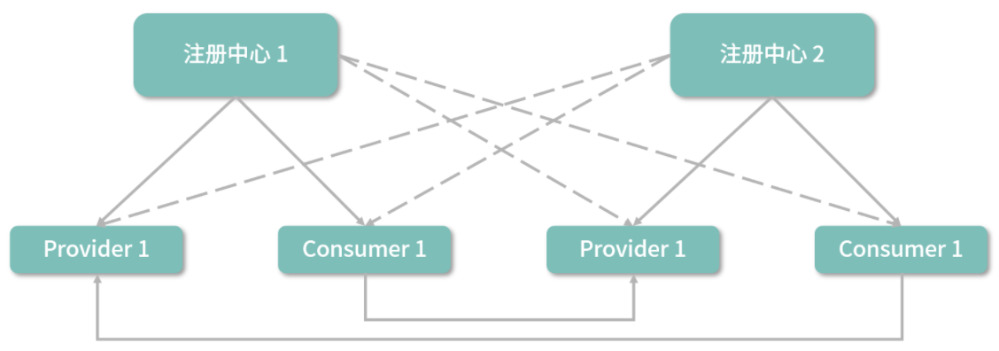
Consumer 可以使用 ZoneAwareClusterInvoker 先在多个注册中心之间进行选择，选定注册中心之后，再选择 Provider 节点，如下图所示：
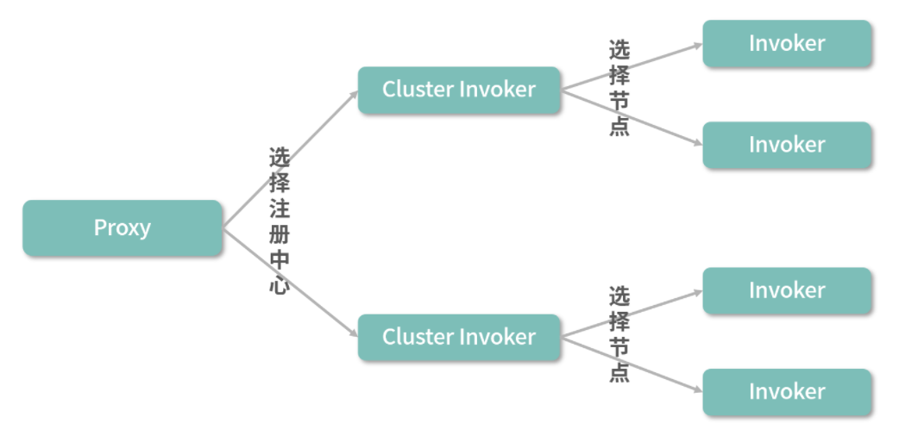
ZoneAwareCluster：这个 Cluster 实现类的扩展名为 zone-aware，在其 doJoin() 方法中创建的是 ZoneAwareClusterInvoker 类型的 Invoker 对象，具体实现如下：
111// ZoneAwareCluster.java2
3public class ZoneAwareCluster extends AbstractCluster {4
5 public final static String NAME = "zone-aware";6
7 8 protected <T> AbstractClusterInvoker<T> doJoin(Directory<T> directory) throws RpcException {9 return new ZoneAwareClusterInvoker<T>(directory);10 }11}ZoneAwareClusterInvoker：在多注册中心之间进行选择的策略有以下四种。
找到preferred属性为 true 的注册中心，它是优先级最高的注册中心，只有该中心无可用 Provider 节点时，才会回落到其他注册中心；
根据请求中的 zone key 做匹配，优先派发到相同 zone 的注册中心；
根据权重（也就是注册中心配置的 weight 属性）进行轮询；
如果上面的策略都未命中，则选择 第一个可用的 Provider 节点 。
481// ZoneAwareClusterInvoker.java2
3public class ZoneAwareClusterInvoker<T> extends AbstractClusterInvoker<T> {4
5 6 public Result doInvoke(Invocation invocation, final List<Invoker<T>> invokers, LoadBalance loadbalance) throws RpcException {7 // 首先找到preferred属性为true的注册中心8 // 它是优先级最高的注册中心，只有该中心无可用 Provider 节点时，才会回落到其他注册中心9 for (Invoker<T> invoker : invokers) {10 MockClusterInvoker<T> mockClusterInvoker = (MockClusterInvoker<T>) invoker;11 if (mockClusterInvoker.isAvailable() && mockClusterInvoker.getRegistryUrl()12 .getParameter(REGISTRY_KEY + "." + PREFERRED_KEY, false)) {13 return mockClusterInvoker.invoke(invocation);14 }15 }16
17 // 根据请求中的registry_zone做匹配，优先派发到相同zone的注册中心18 String zone = (String) invocation.getAttachment(REGISTRY_ZONE);19 if (StringUtils.isNotEmpty(zone)) {20 for (Invoker<T> invoker : invokers) {21 MockClusterInvoker<T> mockClusterInvoker = (MockClusterInvoker<T>) invoker;22 if (mockClusterInvoker.isAvailable() && zone.equals(mockClusterInvoker.getRegistryUrl().getParameter(REGISTRY_KEY + "." + ZONE_KEY))) {23 return mockClusterInvoker.invoke(invocation);24 }25 }26 String force = (String) invocation.getAttachment(REGISTRY_ZONE_FORCE);27 if (StringUtils.isNotEmpty(force) && "true".equalsIgnoreCase(force)) {28 throw new IllegalStateException("No registry instance in zone or no available providers in the registry, zone: "29 + zone30 + ", registries: " + invokers.stream().map(invoker -> ((MockClusterInvoker<T>) invoker).getRegistryUrl().toString()).collect(Collectors.joining(",")));31 }32 }33 // 根据权重（也就是注册中心配置的weight属性）进行轮询34 Invoker<T> balancedInvoker = select(loadbalance, invocation, invokers, null);35 if (balancedInvoker.isAvailable()) {36 return balancedInvoker.invoke(invocation);37 }38
39 // 选择第一个可用的 Provider 节点40 for (Invoker<T> invoker : invokers) {41 MockClusterInvoker<T> mockClusterInvoker = (MockClusterInvoker<T>) invoker;42 if (mockClusterInvoker.isAvailable()) {43 return mockClusterInvoker.invoke(invocation);44 }45 }46 throw new RpcException("No provider available in " + invokers);47 }48} MergeableClusterInvoker 会读取 URL 中的 merger 参数值，如果 merger 参数以 "." 开头，则表示 "." 后的内容是一个方法名，这个方法名是远程目标方法的返回类型中的一个方法，MergeableClusterInvoker 在拿到所有 Invoker 返回的结果对象之后，会遍历每个返回结果，并调用 merger 参数指定的方法，合并这些结果值。
除了指定 Merger 方法名称的合并方式之外，Dubbo 内部还提供了很多默认的 Merger 实现 MergerFactory 工厂类、Merger 接口以及针对 Java 常见数据类型的 Merger 实现。
Merger是一个 @SPI 注解的扩展接口：
61// Merger.java2
3public interface Merger<T> {5 T merge(T... items);6}Merger接口的类继承关系如下图，Java的常见数据类型都有对应的Merger实现：
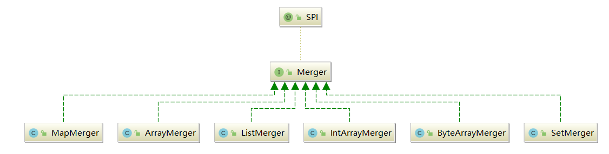
在 MergeableClusterInvoker 使用默认 Merger 实现的时候，会通过 MergerFactory 以及服务接口返回值类型选择合适的 Merger 实现。在 MergerFactory 中维护了一个 ConcurrentHashMap 集合，用来缓存服务接口返回值类型与 Merger 实例之间的映射关系。
MergerFactory.getMerger() 方法会根据传入的 returnType 类型，从缓存中查找相应的 Merger 实现，下面我们来看该方法的具体实现：
511// MergerFactory.java2
3public class MergerFactory {4
5 private static final ConcurrentMap<Class<?>, Merger<?>> MERGER_CACHE =6 new ConcurrentHashMap<Class<?>, Merger<?>>();7
8 public static <T> Merger<T> getMerger(Class<T> returnType) {9 // returnType为空，直接抛出异常10 if (returnType == null) {11 throw new IllegalArgumentException("returnType is null");12 }13
14 Merger result;15 // returnType为数组类型16 if (returnType.isArray()) {17 // 获取数组中元素的类型18 Class type = returnType.getComponentType();19 // 获取元素类型对应的Merger实现20 result = MERGER_CACHE.get(type);21 if (result == null) {22 loadMergers();23 result = MERGER_CACHE.get(type);24 }25 // 如果Dubbo没有提供元素类型对应的Merger实现，则返回ArrayMerger26 if (result == null && !type.isPrimitive()) {27 result = ArrayMerger.INSTANCE;28 }29 } else {30 // 如果returnType不是数组类型，则直接从MERGER_CACHE缓存查找对应的Merger实例31 result = MERGER_CACHE.get(returnType);32 if (result == null) {33 loadMergers();34 result = MERGER_CACHE.get(returnType);35 }36 }37 return result;38 }39
40 static void loadMergers() {41 // 获取Merger接口的所有扩展名称42 Set<String> names = ExtensionLoader.getExtensionLoader(Merger.class)43 .getSupportedExtensions();44 // 遍历所有Merger扩展实现45 for (String name : names) {46 Merger m = ExtensionLoader.getExtensionLoader(Merger.class).getExtension(name);47 // 将Merger实例与对应returnType的映射关系记录到MERGER_CACHE集合中48 MERGER_CACHE.putIfAbsent(ReflectUtils.getGenericClass(m.getClass()), m);49 }50 }51} 上述的loadMergers() 方法会通过 Dubbo SPI 方式加载 Merger 接口全部扩展实现的名称，并填充到 MERGER_CACHE 集合中
前面说了，Java的常见数据类型都有对应的Merger实现，其中不仅有处理 boolean[]、byte[]、char[]、double[]、float[]、int[]、long[]、short[] 等 基础类型数组 的 Merger 实现，还有处理 List、Set、Map 等 集合类 的 Merger 实现。本节我就对几个Dubbo中内置的Merger进行分析。
当服务接口的返回值为数组的时候，会使用 ArrayMerger 将多个数组合并成一个数组，也就是将二维数组拍平成一维数组。ArrayMerger.merge() 方法的具体实现如下：
591// ArrayMerger.java2
3public class ArrayMerger implements Merger<Object[]> {4
5 public static final ArrayMerger INSTANCE = new ArrayMerger();6
7 8 public Object[] merge(Object[]... items) {9 // 传入的结果集合为空，则直接返回空数组10 if (ArrayUtils.isEmpty(items)) {11 return new Object[0];12 }13
14 // 查找第一个不为null的结果15 int i = 0;16 while (i < items.length && items[i] == null) {17 i++;18 }19
20 // 所有items数组中全部结果都为null，则直接返回空数组21 if (i == items.length) {22 return new Object[0];23 }24
25 Class<?> type = items[i].getClass().getComponentType();26
27 int totalLen = 0;28 for (; i < items.length; i++) {29 // 忽略为null的结果30 if (items[i] == null) {31 continue;32 }33 Class<?> itemType = items[i].getClass().getComponentType();34 // 保证类型相同35 if (itemType != type) {36 throw new IllegalArgumentException("Arguments' types are different");37 }38 totalLen += items[i].length;39 }40
41 // 确定最终数组的长度42 if (totalLen == 0) {43 return new Object[0];44 }45
46 Object result = Array.newInstance(type, totalLen);47
48 // 遍历全部的结果数组，将items二维数组中的每个元素都加到result中，形成一维数组49 int index = 0;50 for (Object[] array : items) {51 if (array != null) {52 for (int j = 0; j < array.length; j++) {53 Array.set(result, index++, array[j]);54 }55 }56 }57 return (Object[]) result;58 }59}其他基础数据类型数组的 Merger 实现，与 ArrayMerger 的实现非常类似，都是将相应类型的二维数组拍平成同类型的一维数组，这里以 IntArrayMerger 为例进行分析：
161// IntArrayMerger.java2
3public class IntArrayMerger implements Merger<int[]> {4
5 6 public int[] merge(int[]... items) {7 if (ArrayUtils.isEmpty(items)) {8 // 检测传入的多个int[]不能为空9 return new int[0];10 }11 // 直接使用Stream的API将多个int[]数组拍平成一个int[]数组12 return Arrays.stream(items).filter(Objects::nonNull)13 .flatMapToInt(Arrays::stream)14 .toArray();15 }16}剩余的其他基础类型的 Merger 实现类，例如，FloatArrayMerger、IntArrayMerger、LongArrayMerger、BooleanArrayMerger、ByteArrayMerger、CharArrayMerger、DoubleArrayMerger 等。
SetMerger、ListMerger 和 MapMerger 是针对 Set 、List 和 Map 返回值的 Merger 实现，它们会将多个 Set（或 List、Map）集合合并成一个 Set（或 List、Map）集合，核心原理与 ArrayMerger 的实现类似。这里我简单介绍下 MapMerger 的核心实现：
161// MapMerger.java2
3public class MapMerger implements Merger<Map<?, ?>> {4
5 6 public Map<?, ?> merge(Map<?, ?>... items) {7 if (ArrayUtils.isEmpty(items)) {8 // 空结果集时，这就返回空Map9 return Collections.emptyMap();10 }11 // 将items中所有Map集合中的KV，添加到result这一个Map集合中12 Map<Object, Object> result = new HashMap<Object, Object>();13 Stream.of(items).filter(Objects::nonNull).forEach(result::putAll);14 return result;15 }16}接下来再看 SetMerger 和 ListMerger 的核心实现：
141// SetMerger.java2
3public class SetMerger implements Merger<Set<?>> {4
5 6 public Set<Object> merge(Set<?>... items) {7 if (ArrayUtils.isEmpty(items)) {8 return Collections.emptySet();9 }10 Set<Object> result = new HashSet<Object>();11 Stream.of(items).filter(Objects::nonNull).forEach(result::addAll);12 return result;13 }14}151// ListMerger.java2
3public class ListMerger implements Merger<List<?>> {4
5 6 public List<Object> merge(List<?>... items) {7 if (ArrayUtils.isEmpty(items)) {8 return Collections.emptyList();9 }10 // 通过Stream API将传入的所有List集合拍平成一个List集合并返回11 return Stream.of(items).filter(Objects::nonNull)12 .flatMap(Collection::stream)13 .collect(Collectors.toList());14 }15} 我们可以尝试写一个自己的 Merger 实现，这里我以 dubbo-demo-xml 中的 Provider 和 Consumer 为例进行修改。
首先我们在 dubbo-demo-xml-provider 示例模块中发布两个服务，分别属于 groupA 和 groupB，相应的 dubbo-provider.xml 配置如下：
191<beans xmlns:xsi="http://www.w3.org/2001/XMLSchema-instance"2 xmlns:dubbo="http://dubbo.apache.org/schema/dubbo"3 xmlns="http://www.springframework.org/schema/beans"4 xsi:schemaLocation="http://www.springframework.org/schema/beans http://www.springframework.org/schema/beans/spring-beans-4.3.xsd5 http://dubbo.apache.org/schema/dubbo http://dubbo.apache.org/schema/dubbo/dubbo.xsd">6
7 <dubbo:application metadata-type="remote" name="demo-provider"/>8 <dubbo:metadata-report address="zookeeper://127.0.0.1:2181"/>9 <dubbo:registry address="zookeeper://127.0.0.1:2181"/>10 <dubbo:protocol name="dubbo"/>11
12 <!-- 配置两个Spring Bean -->13 <bean id="demoService" class="org.apache.dubbo.demo.provider.DemoServiceImpl"/>14 <bean id="demoServiceB" class="org.apache.dubbo.demo.provider.DemoServiceImpl"/>15
16 <!-- 将demoService和demoServiceB两个Spring Bean作为服务发布出去，分别属于groupA和groupB-->17 <dubbo:service interface="org.apache.dubbo.demo.DemoService" ref="demoService" group="groupA"/>18 <dubbo:service interface="org.apache.dubbo.demo.DemoService" ref="demoServiceB" group="groupB"/>19</beans> 接下来，在 dubbo-demo-xml-consumer 示例模块中进行服务引用，dubbo-consumer.xml 配置文件的具体内容如下：
121<beans xmlns:xsi="http://www.w3.org/2001/XMLSchema-instance"2 xmlns:dubbo="http://dubbo.apache.org/schema/dubbo"3 xmlns="http://www.springframework.org/schema/beans"4 xsi:schemaLocation="http://www.springframework.org/schema/beans http://www.springframework.org/schema/beans/spring-beans-4.3.xsd5 http://dubbo.apache.org/schema/dubbo http://dubbo.apache.org/schema/dubbo/dubbo.xsd">6
7 <dubbo:application name="demo-consumer"/>8 <dubbo:registry address="zookeeper://127.0.0.1:2181"/>9
10 <!-- 引用DemoService，这里指定了group为*，即可以引用任何group的Provider，同时merger设置为true，即需要对结果进行合并-->11 <dubbo:reference id="demoService" check="false" interface="org.apache.dubbo.demo.DemoService" group="*" merger="true"/>12</beans> 然后，在 dubbo-demo-xml-consumer 示例模块的 /resources/META-INF/dubbo 目录下，添加一个名为 org.apache.dubbo.rpc.cluster.Merger 的 Dubbo SPI 配置文件，其内容如下：
11String = org.apache.dubbo.demo.consumer.StringMergerStringMerger 实现了前面介绍的 Merger 接口，它 会将多个 Provider 节点返回的 String 结果值拼接起来 ，具体实现如下：
171public class StringMerger implements Merger<String> {2
3 4 public String merge(String... items) {5 // 检测空返回值6 if (ArrayUtils.isEmpty(items)) { 7 return "";8 }9
10 // 通过竖线将多个Provider的返回值拼接起来11 String result = "";12 for (String item : items) { 13 result += item + "|";14 }15 return result;16 }17} 最后，依次启动 Zookeeper、dubbo-demo-xml-provider 示例模块和 dubbo-demo-xml-consumer 示例模块。在控制台中会看到如下输出：
11result: Hello world, response from provider: 172.17.108.179:20880|Hello world, response from provider: 172.17.108.179:20880|Mock 机制是 RPC 框架中的常见功能，不仅可以用来实现服务降级，还可以用来在测试中模拟调用的各种异常情况。Dubbo 中的 Mock 机制是在 Consumer 这一端实现的，具体来说就是在 Cluster 这一层实现的。
在前面章节中，我深入介绍了 Dubbo 提供的多种 Cluster 实现以及相关的 Cluster Invoker 实现，ZoneAwareClusterInvoker 就涉及了 MockClusterInvoker 的相关内容。本章，主要介绍 Dubbo 中 Mock 机制的全链路流程，包括与 Cluster 接口相关的 MockClusterWrapper 和 MockClusterInvoker，我还会回顾前面章节的 Router 和 Protocol 接口，分析它们与 Mock 机制相关的实现。
Cluster 接口有两条继承线：
一条线是 AbstractCluster 抽象类，这条继承线涉及的全部 Cluster 实现类，在前面章节中分析过了；
另一条线是 MockClusterWrapper 这条线。
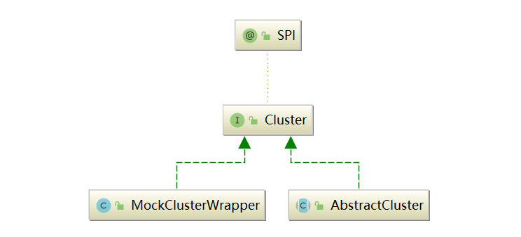
MockClusterWrapper 是 Cluster 对象的包装类 ，之前介绍 Dubbo SPI 机制时已经分析过 Wrapper 的功能，MockClusterWrapper 类会对 Cluster 进行包装。下面是 MockClusterWrapper 的具体实现，其中会在 Cluster Invoker 对象的基础上使用 MockClusterInvoker 进行包装：
171// MockClusterWrapper.java2
3public class MockClusterWrapper implements Cluster {4
5 private Cluster cluster;6
7 // Wrapper类都会有一个拷贝构造函数8 public MockClusterWrapper(Cluster cluster) {9 this.cluster = cluster;10 }11
12 // 用MockClusterInvoker进行包装13 14 public <T> Invoker<T> join(Directory<T> directory) throws RpcException {15 return new MockClusterInvoker<T>(directory, this.cluster.join(directory));16 }17} MockClusterInvoker 是 Dubbo Mock 机制的核心 ，它主要是通过 invoke()、doMockInvoke() 和 selectMockInvoker() 这三个核心方法来实现 Mock 机制的。下面我来逐个介绍这三个方法的具体实现。
invoke方法：它会先判断是否需要开启 Mock 机制：
如果在 mock 参数中配置的是
force模式，则会直接调用 doMockInvoke() 方法进行 mock；如果在 mock 参数中配置的是
fail模式，则会正常调用 Invoker 发起请求，在请求失败时调动 doMockInvoke() 方法进行 mock。411// MockClusterInvoker.java2public class MockClusterInvoker<T> implements Invoker<T> {4public Result invoke(Invocation invocation) throws RpcException {7Result result = null;9// 从URL中获取方法对应的mock配置11String value = getUrl().getMethodParameter(invocation.getMethodName(), MOCK_KEY, Boolean.FALSE.toString()).trim();12if (value.length() == 0 || "false".equalsIgnoreCase(value)) {13// 若mock参数未配置或是配置为false，则不会开启Mock机制，直接调用底层的Invoker14result = this.invoker.invoke(invocation);15} else if (value.startsWith("force")) {16// 若mock参数配置为force，则表示强制mock，直接调用doMockInvoke()方法17result = doMockInvoke(invocation, null);18} else {19try {20result = this.invoker.invoke(invocation);21if(result.getException() != null && result.getException() instanceof RpcException){22RpcException rpcException= (RpcException)result.getException();23if(rpcException.isBiz()){24throw rpcException;25}else {26result = doMockInvoke(invocation, rpcException);27}28}29} catch (RpcException e) {31// 如果是业务异常，会直接抛出32if (e.isBiz()) {33throw e;34}35// 如果是非业务异常，会调用doMockInvoke()方法返回mock结果36result = doMockInvoke(invocation, e);37}38}39return result;40}41}doMockInvoke方法：在 doMockInvoke() 方法中，首先调用 selectMockInvoker() 方法获取 MockInvoker 对象，并调用其 invoke() 方法进行 mock 操作。doMockInvoke() 方法的具体实现如下：
311// MockClusterInvoker.java2private Result doMockInvoke(Invocation invocation, RpcException e) {4Result result = null;5Invoker<T> minvoker;6// 调用selectMockInvoker()方法过滤得到MockInvoker8List<Invoker<T>> mockInvokers = selectMockInvoker(invocation);9// 如果selectMockInvoker()方法未返回MockInvoker对象，则创建一个MockInvoker11if (CollectionUtils.isEmpty(mockInvokers)) {12minvoker = (Invoker<T>) new MockInvoker(getUrl(), directory.getInterface());13} else {14minvoker = mockInvokers.get(0);15}16try {18// 调用MockInvoker.invoke()方法进行mock19result = minvoker.invoke(invocation);20} catch (RpcException me) {21// 如果是业务异常，则在Result中设置该异常22if (me.isBiz()) {23result = AsyncRpcResult.newDefaultAsyncResult(me.getCause(), invocation);24} else {25throw new RpcException(me.getCode(), getMockExceptionMessage(e, me), me.getCause());26}27} catch (Throwable me) {28throw new RpcException(getMockExceptionMessage(e, me), me.getCause());29}30return result;31}
selectMockInvoker方法：selectMockInvoker() 方法中并没有进行 MockInvoker 的选择或是创建，它仅仅是将 Invocation 附属信息中的
invocation.need.mock属性设置为 true，然后交给 Directory 中的 Router 集合进行处理。selectMockInvoker() 方法的具体实现如下：131// selectMockInvoker.java2private List<Invoker<T>> selectMockInvoker(Invocation invocation) {4List<Invoker<T>> invokers = null;6if (invocation instanceof RpcInvocation) {8// 将Invocation附属信息中的invocation.need.mock属性设置为true9((RpcInvocation) invocation).setAttachment(INVOCATION_NEED_MOCK, Boolean.TRUE.toString());10invokers = directory.list(invocation);11}12return invokers;13}
在前面的章节中，我介绍了 Router 接口的多个实现类，但当时并没有深入介绍 Mock 相关的 Router 实现类—— MockInvokersSelector，它的继承关系如下图所示：
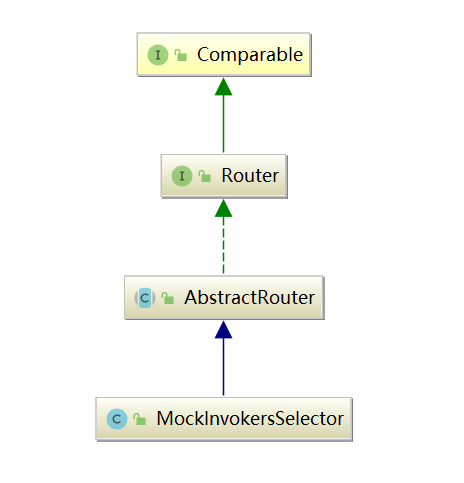
MockInvokersSelector 是 Dubbo Mock 机制相关的 Router 实现 ，在未开启 Mock 机制的时候，会返回正常的 Invoker 对象集合；在开启 Mock 机制之后，会返回 MockInvoker 对象集合。MockInvokersSelector 的具体实现如下：
361// MockInvokersSelector.java2
3public class MockInvokersSelector extends AbstractRouter {4
5 public static final String NAME = "MOCK_ROUTER";6 private static final int MOCK_INVOKERS_DEFAULT_PRIORITY = Integer.MIN_VALUE;7
8 public MockInvokersSelector() {9 this.priority = MOCK_INVOKERS_DEFAULT_PRIORITY;10 }11
12 13 public <T> List<Invoker<T>> route(final List<Invoker<T>> invokers,14 URL url, final Invocation invocation) throws RpcException {15 if (CollectionUtils.isEmpty(invokers)) {16 return invokers;17 }18
19 // attachments为null，会过滤掉MockInvoker，只返回正常的Invoker对象20 if (invocation.getObjectAttachments() == null) {21 return getNormalInvokers(invokers);22 } else {23 String value = (String) invocation.getObjectAttachments().get(INVOCATION_NEED_MOCK);24 // invocation.need.mock为null，会过滤掉MockInvoker，只返回正常的Invoker对象25 if (value == null) {26 return getNormalInvokers(invokers);27 } 28 // invocation.need.mock为true，会过滤掉MockInvoker，只返回正常的Invoker对象29 else if (Boolean.TRUE.toString().equalsIgnoreCase(value)) {30 return getMockedInvokers(invokers);31 }32 }33 // invocation.need.mock为false，则会将MockInvoker和正常的Invoker一起返回34 return invokers;35 }36}在 getMockedInvokers() 方法中，会根据 URL 的 Protocol 进行过滤，只返回 Protocol 为 mock 的 Invoker 对象，而 getNormalInvokers() 方法只会返回 Protocol 不为 mock 的 Invoker 对象。这两个方法的具体实现比较简单，这里就不再赘述。
介绍完 Mock 功能在 Cluster 层的相关实现之后，我们还要来看一下 Dubbo 在 RPC 层对 Mock 机制的支持，这里涉及 MockProtocol 和 MockInvoker 两个类。
首先来看 MockProtocol，它是 Protocol 接口的扩展实现，扩展名称为 mock。 MockProtocol 只能通过 refer() 方法创建 MockInvoker，不能通过 export() 方法暴露服务 ，具体实现如下：
211// MockProtocol.java2
3final public class MockProtocol extends AbstractProtocol {4
5 6 public int getDefaultPort() {7 return 0;8 }9
10 11 public <T> Exporter<T> export(Invoker<T> invoker) throws RpcException {12 // 直接抛出异常，无法暴露服务13 throw new UnsupportedOperationException();14 }15
16 17 public <T> Invoker<T> protocolBindingRefer(Class<T> type, URL url) throws RpcException {18 // 直接创建MockInvoker对象19 return new MockInvoker<>(url, type);20 }21}看下MockInvoker是如何解析各类 mock 配置的，以及如何根据不同 mock 配置进行不同处理的。这里重点来看 MockInvoker.invoke() 方法，其中针对 mock 参数进行的分类处理具体有下面三条分支：
mock 参数以 return 开头：直接返回 mock 参数指定的固定值，例如，empty、null、true、false、json 等。mock 参数中指定的固定返回值将会由 parseMockValue() 方法进行解析；
mock 参数以 throw 开头：直接抛出异常。如果在 mock 参数中没有指定异常类型，则抛出 RpcException，否则抛出指定的 Exception 类型；
mock 参数为 true 或 default 时，会查找服务接口对应的 Mock 实现；如果是其他值，则直接作为服务接口的 Mock 实现。拿到 Mock 实现之后，转换成 Invoker 进行调用。
MockInvoker.invoke() 方法的具体实现如下所示：
661// MockInvoker.java2public Result invoke(Invocation invocation) throws RpcException {4if (invocation instanceof RpcInvocation) {6((RpcInvocation) invocation).setInvoker(this);7}8// 获取mock值(会从URL中的methodName.mock参数或mock参数获取)10String mock = null;11if (getUrl().hasMethodParameter(invocation.getMethodName())) {12mock = getUrl().getParameter(invocation.getMethodName() + "." + MOCK_KEY);13}14if (StringUtils.isBlank(mock)) {16mock = getUrl().getParameter(MOCK_KEY);17}18// 没有配置mock值，直接抛出异常20if (StringUtils.isBlank(mock)) {21throw new RpcException(new IllegalAccessException("mock can not be null. url :" + url));22}23// mock值进行处理，去除"force:"、"fail:"前缀等25mock = normalizeMock(URL.decode(mock));26// mock值以return开头28if (mock.startsWith(RETURN_PREFIX)) {29mock = mock.substring(RETURN_PREFIX.length()).trim();30try {31// 获取响应结果的类型32Type[] returnTypes = RpcUtils.getReturnTypes(invocation);33// 根据结果类型，对mock值中结果值进行转换35Object value = parseMockValue(mock, returnTypes);36// 将固定的mock值设置到Result中38return AsyncRpcResult.newDefaultAsyncResult(value, invocation);39} catch (Exception ew) {40throw new RpcException("mock return invoke error. method :" + invocation.getMethodName()41+ ", mock:" + mock + ", url: " + url, ew);42}43}44// mock值以throw开头45else if (mock.startsWith(THROW_PREFIX)) {46mock = mock.substring(THROW_PREFIX.length()).trim();47// 未指定异常类型，直接抛出RpcException48if (StringUtils.isBlank(mock)) {49throw new RpcException("mocked exception for service degradation.");50}51// 抛出自定义异常52else {53Throwable t = getThrowable(mock);54throw new RpcException(RpcException.BIZ_EXCEPTION, t);55}56}57// 执行mockService得到mock结果58else {59try {60Invoker<T> invoker = getInvoker(mock);61return invoker.invoke(invocation);62} catch (Throwable t) {63throw new RpcException("Failed to create mock implementation class " + mock, t);64}65}66}
针对 return 和 throw 的处理逻辑比较简单，但 getInvoker() 方法略微复杂些，其中会处理 MOCK_MAP 缓存的读写、Mock 实现类的查找、生成和调用 Invoker，具体实现如下：
241// MockInvoker.java2private Invoker<T> getInvoker(String mockService) {4// 尝试从MOCK_MAP集合中获取对应的Invoker对象6Invoker<T> invoker = (Invoker<T>) MOCK_MAP.get(mockService);7if (invoker != null) {9return invoker;10}11// 根据serviceType查找mock的实现类13Class<T> serviceType = (Class<T>) ReflectUtils.forName(url.getServiceInterface());14T mockObject = (T) getMockObject(mockService, serviceType);15// 创建Invoker对象17invoker = PROXY_FACTORY.getInvoker(mockObject, serviceType, url);18// 写入缓存20if (MOCK_MAP.size() < 10000) {21MOCK_MAP.put(mockService, invoker);22}23return invoker;24}
在 getMockObject() 方法中会检查 mockService 参数是否为 true 或 default，如果是的话，则在服务接口后添加 Mock 字符串，作为服务接口的 Mock 实现；如果不是的话，则直接将 mockService 实现作为服务接口的 Mock 实现。getMockObject() 方法的具体实现如下：
161// MockInvoker.java2public static Object getMockObject(String mockService, Class serviceType) {4if (ConfigUtils.isDefault(mockService)) {6// 如果mock为true或default值，会在服务接口后添加Mock字符串，得到对应的实现类名称，并进行实例化7mockService = serviceType.getName() + "Mock";8}9Class<?> mockClass = ReflectUtils.forName(mockService);10if (!serviceType.isAssignableFrom(mockClass)) {12// 检查mockClass是否继承serviceType接口13throw new IllegalStateException("...");14}15return mockClass.newInstance();16}